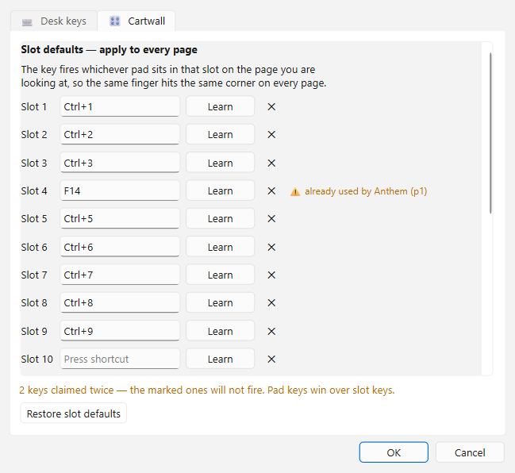
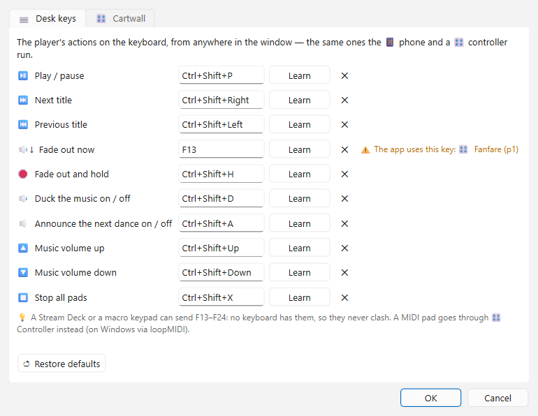
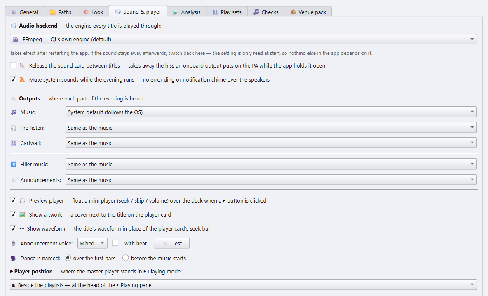
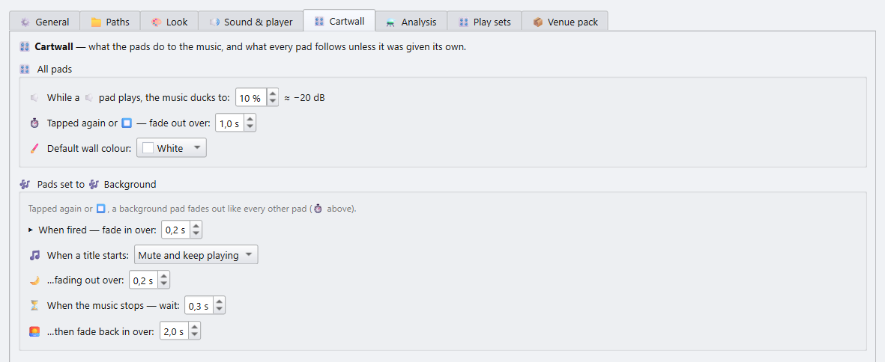

DanceSport Player — Benutzerhandbuch
Dieses Handbuch geht den Player so durch, wie er auf einem Turnier oder einem Tanzabend benutzt wird: einmal einrichten, die Playlists laden, dann die Musik auf der Fläche fahren.
Das ganze Handbuch gibt es auch als eine einzige Webseite, manual.html. Nach einer Änderung an einem Kapitel baust du sie mit py -m tools.docs.build_manual_html neu.

Kapitel
- Erste Schritte: der Player, seine Ordner, die Analyse und ein Rundgang durch das Hauptfenster.
- Bibliothek und Turniere: die Musikbibliothek durchsuchen und filtern, und der Baum deiner Turnier-Playlists.
- Playlists: die Decks als Ablaufpläne, der Party-Bereich, Wunschlisten,
.m3u-Playlists laden und speichern, und Playlists von einem anderen PC. - Den Abend fahren: der Check 🚦 Bereit?, die Player-Karte und ihre Wellenform, der Wiedergabe-Bereich, Abspiel-Sets, Ansagen, der Paso-Doble-Stopp, die Cartwall, der Präsentationsbildschirm, die 📱 Handy-Fernbedienung und ein 🎛 Hardware-Controller.
- Tags: der 🏷 Tag-Editor, ★ Bewertungen, das Feld Custom und Tags in die MP3 schreiben.
- Einstellungen: die Reiter der Reihe nach: Allgemein, Pfade, das Aussehen (Themes, eigene Looks, Akzentfarbe, Sprache), Ton, Analyse, Spiel-Sets und das 📦 Hallenpaket.
- Tastatur und Maus: alle Tastenkürzel in einer Liste.
Installation und Konfigurationsdateien beschreibt die README des Projekts.
Schreibweisen
- Knöpfe und Menüeinträge stehen so da, wie sie in der App heißen, mit Symbol, wo es beim Finden hilft: 🎛 Cartwall, 📚 Bibliothek.
- Rechtsklick ▸ 💾 Speichern als M3U… heißt: rechts klicken, dann diesen Eintrag im Kontextmenü wählen.
- Fast jedes Bedienelement hat einen Tooltip. Wo dieses Handbuch bei einem Detail knapp ist, fahr mit der Maus darüber.
- F1 öffnet in der App die Übersicht aller Tastenkürzel. Es ist dieselbe Liste wie in Kapitel 7.
- Die App spricht Deutsch, Englisch, Spanisch, Niederländisch und Russisch (⚙ Einstellungen ▸ 🎨 Aussehen ▸ 🌐 Sprache). Die Bilder zeigen die englische Oberfläche. In einer nicht deutschen Oberfläche folgen auch die Tanz- und Rundennamen der Sprache: Slow Waltz, Round 1, Final. Mit dem Haken Deutsche Tanz- und Rundennamen auch in einer anderssprachigen Oberfläche unter der Sprache bleiben es Langsamer Walzer, Vorrunde, Finale; der Präsentationsbildschirm und die aufgenommenen Ansagen sind dann ebenfalls deutsch, und eine Eintanzliste heißt Eintanzen. Playlists und Exporte behalten die deutschen Tanz- und Rundennamen in jedem Fall.
Begriffe
| Begriff | Bedeutung |
|---|---|
| Deck | Eine Playlist auf dem Bildschirm, beschriftet mit A, B, C und so weiter. Es hält den Ablauf eines Turniers oder eines Teils des Abends. |
| Party-Bereich | Eine lange Playlist für einen Tanzabend, zwischen den Decks und den Wunschlisten. |
| Wunschliste | Eine flache Liste von Titeln, die du für später parkst: Musikwünsche, ein neues Album. Sie liegt unter den Decks. |
| Runde | Vorrunde, Zwischenrunde, Semifinale, Finale. Eine Turnier-Playlist ist nach ihren Runden gegliedert. |
| Gruppe | Paare, die gleichzeitig tanzen (englisch Heat). Jede Gruppe einer Runde bekommt pro Tanz ihren eigenen Titel. |
| Takt / BPM | Tempo in Takten pro Minute, wie die TSO es festlegt (Samba 50–52, Langsamer Walzer 28–30). [T51] in einem Deck heißt 51 Takte pro Minute. |
| TSO-Bereich | Das Tempo, das die Turnierordnung für einen Tanz erlaubt. |
1 · Erste Schritte
Wer auf einem Turnier die Musik fährt, plant nichts, sondern lädt eine fertige Playlist und spielt sie ab: zeitgesteuert, mit dem Paso-Doble-Schnitt, den gesprochenen Tanzansagen, dem Präsentationsbildschirm und der Cartwall. Der DanceSport Player ist die App für genau diese Aufgabe.
Du bekommst ihn auf zwei Wegen:
- als Player-Build,
DanceSport-Player, ein eigenes Programm für den PC in der Halle; - als volle App im App-Modus Nur Player, unter ⚙ Einstellungen ▸ ⚙ Allgemein ▸ App-Modus.
Beide sehen gleich aus und arbeiten gleich. Das Fenster heißt DanceSport Player und öffnet auf der Seite ▶ Wiedergabe.
Der erste Start
Beim ersten Start öffnet die App mit einem Layout für die Halle:
- keine Playlist-Decks und keine Wunschlisten;
- eine leere Party-Liste, bereit für eine
.m3u, die du darauf ziehst; - die 📚 Bibliothek offen;
- die 🎛 Cartwall geschlossen;
- das 🎉 Party-Set an: volle Länge, automatisch weiter, keine Pause, angeglichene Lautstärke. Siehe Abspiel-Sets.
Das passiert nur einmal. Ab dem zweiten Start öffnet die App so, wie du sie verlassen hast.
Der App deine Musik zeigen
Der erste Start fragt nach deinem Musikordner und schlägt den vor, den er gefunden hat. Wähle den Ordner mit deiner Tanzmusik, nicht ein ganzes Laufwerk: Jeder Start liest die MP3-Dateien darunter, und der erste Start liest jede einmal, was auf einer externen Platte lange dauert.
Um ihn später zu ändern, öffne ⚙ Einstellungen. Der Knopf sitzt unten im Wiedergabe-Bereich. Der Reiter 📁 Pfade hält die Ordner:

| Feld | Wofür es da ist |
|---|---|
| Favoriten-Bibliothek | Dein Turniermusik-Ordner. Er wird bei jedem Start eingelesen und füllt die 📚 Bibliothek. |
| Speichern-unter-Ordner | Wo Speichern als M3U… beginnt. |
| Turnier-Playlists | Deine vorhandenen Turnier-.m3u-Dateien. Die Spalte Pop zählt, in wie vielen davon ein Titel vorkommt. |
| Referenzpfad | Der Ordner, in dem die Musik auf diesem PC liegt. Eine Playlist von einem anderen PC wird beim Laden darauf umgehängt, siehe Kapitel 3. |
| Suchordner | Weitere Orte, an denen ein Titel gesucht wird, wenn eine Playlist auf einem anderen PC geschrieben wurde. Ein Ordner pro Zeile. |
Der Rest dieses Reiters steht unter Einstellungen.
Der erste Scan und die Analyse
Beim Start holt die App deine letzte Sitzung zurück, öffnet sich und liest danach die Favoriten-Bibliothek ein. Die Statusleiste zeigt, wie weit der Scan ist (📚 Bibliothek: gelesene / alle Dateien). Deine Decks spielen sofort; der Bibliotheks-Browser und die 🏆 Turnierliste bleiben grau, bis der Scan fertig ist. ⏸ neben dem Balken pausiert den Scan, ▶ setzt ihn fort; ⏹ beendet ihn und verwendet die bisher gelesenen Titel als Bibliothek, der nächste Start liest den Rest. Titel und Tags werden zwischengespeichert, nur der erste Scan einer großen Bibliothek dauert also lange.
Drei Funktionen brauchen pro Titel einmal eine kurze Analyse:
- 🔊 Lautstärke angleichen braucht die Lautheit,
- der 🐂 Paso-Doble-Stopp braucht die Höhepunkte,
- das Überspringen von Stille am Anfang und Ende braucht die Stillen.
Du startest sie mit 🧱 ALLE Caches aufbauen… unter ⚙ Einstellungen ▸ ⚗ Analyse. Die Analyse liest deine Dateien nur und lässt sich abbrechen. Was schon im Cache liegt, wird wiederverwendet.
Jeder Lauf schreibt seinen Fortschritt in session.log im Datenordner der App, neben audio_features.db: mit wie vielen Dateien er beginnt, alle 5 % eine Zeile mit der Restzeit und am Ende eine Zusammenfassung mit den Fehlern.
Zu Hause analysieren, in der Halle spielen
Die Analyse braucht Zeit, die du am Turniertag vielleicht nicht hast. Lass sie zu Hause laufen und kopiere dann audio_features.db neben DanceSport-Player.exe auf den PC in der Halle. Der Player liest die gespeicherten Werte und braucht in der Halle keine Analyse.
Ein Rundgang durch das Hauptfenster
Links: die Seitenleiste. Oben die Player-Karte, darunter der Wiedergabe-Bereich. Beide beschreibt Kapitel 4.
Oben: die Werkzeugleiste. Auf schmalen Bildschirmen schrumpfen die Knöpfe auf ihr Symbol. Fahr mit der Maus darüber, dann siehst du den vollen Namen.
| Knopf | Macht |
|---|---|
| ⊟ Einklappen | Klappt jeden Runden- und Tanzkopf zu. Noch ein Klick öffnet sie wieder. |
| ▴ Decks | Klappt jedes Deck und jede Wunschliste zu einem Reiter ein. |
| 💾 Speichern | Schreibt jedes nicht leere Deck in seine eigene .m3u. |
| 📌 Zustand | Speichert jetzt die ganze Sitzung. Das passiert auch von selbst bei jeder Änderung und beim Schließen. |
| 🧹 Leeren | Leert jedes Deck. Wunschlisten bleiben erhalten. |
| 🚦 Prüfen ▾ | 🚦 Bereit?, der Check vor dem Abend, siehe Kapitel 4. Die volle App ergänzt das Menü um 🔁 Doppelte prüfen, 🎵 Musik prüfen und 🧭 Pfade reparieren. |
| ⧉ n Playlists | Schaltet durch die Anzahl der Decks auf dem Bildschirm. Ein Rechtsklick geht rückwärts. |
| 🗜 Kompakt | Schaltet die Kopfzeilen durch: voll → kompakt → ohne Gruppen → nummeriert. |
| ⭐ n Wunschlisten | Schaltet den Wunschlistenbereich durch: aus → 1 → 2 → 3 → 4 → 2×2. |
| 🤸 Party ▾ | Blendet den Party-Bereich ein oder aus. |
| 📚 Bibliothek | Blendet den Bereich Bibliothek und Turniere ein oder aus. |
| 🎛 Cartwall | Blendet die Wand mit den Sample-Pads ein oder aus. |
| ❔ | Ein Menü: ⌨ Tastenkürzel (F1), 📖 Handbuch, 📜 Gespielte Titel…, ⛶ Vollbild (F11), 📝 Log exportieren… (kopiert die Log-Dateien in einen Ordner deiner Wahl), ⚙ Einstellungen… (F12) und ℹ Über… |
Mitte: die Decks. Jedes Deck ist eine Playlist, siehe Kapitel 3.
Unter den Decks: der Party-Bereich und die Wunschlisten, und darunter der Bereich 📚 Bibliothek / 🏆 Turniere, siehe Kapitel 2.
Unten:
- die Knöpfe für Rückgängig und Wiederholen, mit der Zahl der Schritte, die sie zurückgehen können;
- der Titel, der im Player bereitliegt;
- die Statusleiste. Solange die 📱 Handy-Fernbedienung läuft, sitzt an ihrem rechten Ende ein grünes Abzeichen 📱 Fernbedienung; ein Klick darauf öffnet das Fenster der Fernbedienung, siehe Kapitel 4.
Alles, was du siehst, wird beim Arbeiten gespeichert: Decks, Wunschlisten, das Fensterlayout und was ein- oder ausgeklappt ist. Der nächste Start bringt es genau so zurück.
⛶ Vollbild
F11 oder ❔ ▸ ⛶ Vollbild lässt das Fenster den ganzen Bildschirm füllen. Noch einmal F11 oder ❔ ▸ ⛶ Vollbild beenden holt es zurück. Im Vollbild zeigt die Statusleiste an ihrem rechten Ende eine Uhr, mit Datum und Sekunden: Sa, 10.10.2026 20:45:12. Für die Uhrzeit allein setzt du den Haken ⛶ Uhr im Vollbild: nur die Uhrzeit unter ⚙ Einstellungen ▸ 🎨 Aussehen.
Die App schließen
Das Fenster zu schließen, während Musik läuft, würde sie auf der Fläche anhalten, deshalb fragt die App zuerst: Es läuft Musik. Trotzdem beenden und sie anhalten? Nein ist vorgewählt und lässt alles weiterlaufen. Ja schneidet die Musik nicht ab: der Titel blendet über das Ausblenden seiner Liste aus, ebenso die Musik einer Pause zwischen zwei Titeln; jedes klingende 🎛 Cartwall-Pad blendet über sein eigenes aus, und das Fenster schließt, wenn das letzte still ist. Solange sagt ein kleines Fenster 🔉 Die Musik wird ausgeblendet… Die App schließt gleich., sein Balken füllt sich mit dem Ausblenden. Ein zweites ✕ während des Ausblendens schließt sofort. Klingt nichts, schließt die App sofort.
Der Player-Build
Der Player-Build ist etwa 220 MB groß. Gebaut wird er mit build_player.bat; siehe BUILD.md im Projekt. Er enthält alles, womit ein Turnier läuft: Wiedergabe und den Tempo-Regler mit ±16 %, angeglichene Lautstärke, die Erkennung der Paso-Doble-Höhepunkte, die Stille-Erkennung, die Cartwall, die Bibliothek und die Ansagen.
Aus der vollen App im Player-Modus gestartet, bietet die App außerdem 🖨 Drucken, ein PDF des Ablaufs, und bis zu acht Decks.
Weiter: Bibliothek und Turniere
2 · Bibliothek und Turniere
Zurück zur Übersicht · zurück: Erste Schritte
Der Bereich unter den Wunschlisten hat zwei Reiter. Du blendest ihn mit 📚 Bibliothek in der Werkzeugleiste ein oder aus. Zieh den Teiler darüber, um ihm mehr Platz zu geben.
📚 Bibliothek
Die ganze Favoriten-Bibliothek als eine sortierbare Tabelle. Filtere sie und zieh dann Titel in ein Deck, den Party-Bereich oder eine Wunschliste.
⭐ Favoriten im Kopf schaltet die Tabelle auf 🌐 Ganze Bibliothek um: alle Dateien im Ordner Gesamter Musikbestand aus ⚙ Einstellungen. Beim ersten Umschalten wird dieser Index geladen, das kann einen Moment dauern: die Tabelle zeigt solange 🌐 Die ganze Bibliothek wird geladen… und zählt dann an ihrem Fuß die Titel mit, während sie sie auflistet. Ein weiterer Klick schaltet zurück.
Dieser Index ist nur so aktuell wie der letzte Durchlauf durch den Ordner. Fehlen Titel, geht 🔄 neben 🌐 (oder 🔄 Musikbestand nach neuen Titeln durchsuchen unter ⚙ Einstellungen → 📁 Pfade) ihn erneut durch. Gelesen werden nur die Tags neuer und geänderter Dateien, ohne Audio-Analyse, und das im Hintergrund: Fortschritt, ⏸ Pause und ⏹ Stopp stehen in der Statusleiste, wie beim Scan beim Start.

| Filter | Zeigt |
|---|---|
| 🔍 Textfeld | Titel, deren Titel, Interpret oder Kommentar-Tag den Text enthält. Tags sind Markierungen wie vocal_f, classic, eintanzen. |
| Alle Tänze | Einen Tanz, oder alle Standard- oder alle Lateintänze. |
| Alle Klassen | Titel, die zu einer der angehakten Startklassen passen. Ein Klick hakt eine Klasse an oder ab und lässt die Liste offen, so lassen sich mehrere anhaken; Alle Klassen nimmt alle Haken weg, und wer auch die letzte Klasse anhakt, landet wieder auf Alle Klassen, und die Liste klappt zu. Titel ohne Klassen-Tag erscheinen nur unter Alle Klassen; Gesellschaftstänze haben keine Klassen und bleiben. |
| Gesang + Instr. | Nur 🎤 Titel mit Gesang oder nur 🎻 instrumentale Titel. |
| Alle Kategorien | 🏆 Nur Turnier blendet Hymnen, Hintergrundmusik, Dateien mit falschem Tempo, Duplikate und Saison-Ordner aus. Du kannst auch eine dieser Kategorien wählen, was für eine Party praktisch ist. Ein Titel außerhalb dieser Ordner kommt in eine Kategorie, wenn sein Kommentar ihren Namen als Tag trägt, z. B. Hintergrund, Hymnen, kein Turnier, Doppelte oder Weihnachten; die englischen Namen gehen auch. 🏷 Kein Klassen-Tag listet die Turniertitel, deren Kommentar kein Klassen-Tag trägt, damit du sie taggen kannst. |
| Gespielt: alle | ✦ Nie gespielt, ★ Selten, ★ Bewährt oder 📅 Seit 1 J. nicht (gespielt, aber in keiner Playlist des letzten Jahres). |
| Hinzugefügt: alle | Dateien, die in den letzten 30 oder 90 Tagen oder den letzten 12 oder 18 Monaten angelegt wurden. Kombiniert mit ✦ Nie gespielt findest du, was du hineinkopiert, aber nie benutzt hast. |
| 🆕 Ungeplant | Nur Titel, die in keinem der offenen Decks stehen. |
| 🏷 Nur mit Klasse | Blendet die Turniertitel ohne Klassen-Tag aus, die sonst erscheinen, wenn keine oder jede Klasse angehakt ist. Gesellschaftstänze haben keine Klassen und bleiben. |
- ▶ in einer Zeile spielt den Titel im Player ab. Die Leertaste macht dasselbe für die markierte Zeile. Ist ein 🎧 Vorhör-Ausgang gewählt, spielt er dort, und die Musik läuft weiter.
- Titel zeigt das Titel-Tag der MP3; eine Datei ohne zeigt ihren bereinigten Dateinamen. BPM ist das Tempo in Takten pro Minute, siehe Kapitel 3.
- Ein Doppelklick auf eine Zeile tut, was ⚙ Einstellungen ▸ 🔊 Ton & Player ▸ 📂 Doppelklick auf einen Titel in 📚 der Bibliothek sagt: nichts (ab Werk), die Datei im Musikprogramm deines Systems öffnen, oder den 🏷 Tags-Editor auf dem doppelgeklickten Feld öffnen.
- Ein Rechtsklick auf eine Zeile bietet 📋 Dateipfad kopieren, 📂 Im Explorer zeigen, 🎧 In externem Player öffnen, 🏷 MP3-Tags neu einlesen und 🏷 Tags bearbeiten…. Sind mehrere Zeilen markiert, bearbeitet der Tag-Editor alle. Siehe Kapitel 5.
- Ein Rechtsklick auf den Spaltenkopf wählt die Spalten oder schaltet auf kurze Tanznamen (LW, SB) um. Die Spalten ★ (Bewertung), Custom, Dateiname, Album, Kommentar und Gespielt sind anfangs ausgeblendet und lassen sich hier einblenden. Dateiname ist der bereinigte Name der Datei, mit dem vollen Pfad im Tooltip; Album ist der Album-Tag der MP3, Kommentar ihr Kommentar, wie er drinsteht, und Gespielt, wie oft der Titel in den letzten 24 Stunden lief, wie in den Playlists, mit Zähler für Gespielt zurücksetzen im selben Menü. Custom einem MP3-Tag zuordnen… füllt Custom aus einem Tag deiner Wahl.
🏆 Turniere
Dein Archiv an Turnier-Playlists, so sortiert, wie du über sie denkst: eine Saison, ein Wochenende, eine Halle, ein Turnier. Die Ordner sind nur Beschriftungen. Die 🎵 Einträge zeigen auf .m3u-Dateien, wo immer diese auf der Platte liegen.

Den Baum füllen
- Zieh
.m3u-Dateien oder einen ganzen Ordner aus dem Explorer auf den Baum. - 📁 legt einen Ordner an: einen Tag, eine Halle, ein Turnier.
- ＋ fügt dem markierten Ordner Playlist-Dateien hinzu. Rechtsklick auf den Baum ▸ 📂 Ordner mit Playlists hinzufügen… legt einen ganzen Ordner von der Platte als Zweig an, mit jeder
.m3udarunter, genauso wie ein aus dem Explorer gezogener Ordner. - ✎ (oder F2) benennt den markierten Eintrag um. 🗑 (oder Entf) entfernt ihn aus dem Baum. Die Datei auf der Platte bleibt unberührt. In der Slot-Ansicht wirken diese auf den gewählten Slot; klick auf die Ordnerzeile, um auf den Ordner zu wirken.
- Strg + A markiert alles: jeden Slot des Ordners oder in der Titel-Ansicht jeden Eintrag des Baums. Entf und 🗑 entfernen dann nach einer Rückfrage alle markierten Einträge.
- ⊟ klappt jeden Ordner zu, was bei einer langen Saison hilft.
- Aus einem Deck: Rechtsklick ▸ 🏆 Speichern und in „Turniere“ eintragen… speichert die Playlist und legt sie hier ab. Sie kommt in den markierten Ordner, neben die markierte Playlist oder an die Wurzel. Der neue Eintrag wird sofort gewählt und gezeigt.
Slot-Ansicht
Wähl links einen Ordner, dann erscheinen rechts seine Playlists als Slots. Jeder Slot zeigt:
- den Namen der Playlist,
- die Zahl der Titel (♪),
- die Tänze,
- die Runden, die sie enthält (VR = Vorrunde, ZR = Zwischenrunde, ER = Endrunde).
- Zieh einen Slot auf ein Deck, um diese Playlist dort zu laden. Ziehst du einen von mehreren markierten Slots, kommen alle mit; sie gehen in die freien Decks, je einer. Ein einfacher Klick verengt die Markierung auf einen Slot.
- Ein Doppelklick auf einen Slot lädt ihn auf das aktive Deck.
- Ein Rechtsklick auf einen Slot bietet ▶ Auf das aktive Deck laden, 🎵 Seine Titel zeigen, ✎ Umbenennen und 🗑 Aus dem Baum entfernen.
Titel-Ansicht
▤ schaltet auf die Titel-Ansicht. Der Baum listet jetzt die Playlists selbst, und rechts stehen die Titel der gewählten Playlist in Abspielreihenfolge, mit Runde und Tanz. Runden stehen kurz da, so wie die Slots sie schreiben (VR, 1ZR, ER). Fahr mit der Maus darüber für den vollen Namen.

- ▶ oder die Leertaste spielt einen Titel ab, auf dem 🎧 Vorhör-Ausgang, wenn einer gewählt ist. Ein Doppelklick tut dasselbe wie in der 📚 Bibliothek (siehe oben).
- Zieh Titel auf ein Deck, den Party-Bereich oder eine Wunschliste.
- Die Leiste darunter zeigt die Zahl der Titel und die gesamte Spielzeit. Titel, die die Bibliothek nicht kennt, werden mitgezählt, bringen aber keine Zeit mit.
- Titel zeigt den Titel-Tag der MP3, oder den bereinigten Dateinamen, wenn der Tag leer ist. Wie in der Bibliothek blendet ein Rechtsklick auf den Spaltenkopf Spalten ein oder aus (Titel bleibt immer), und die Spaltenköpfe lassen sich in eine andere Reihenfolge ziehen. Dateiname und Gespielt sind anfangs ausgeblendet: Dateiname zeigt den bereinigten Namen der Datei, mit dem vollen Pfad im Tooltip, und Gespielt zählt die Wiedergaben der letzten 24 Stunden wie in der Bibliothek. Der Reiter merkt sich die Spalten.
▦ schaltet zurück auf die Slots.
Weiter: Playlists
3 · Playlists
Zurück zur Übersicht · zurück: Bibliothek und Turniere
Der Player hält seine Musik in drei Arten von Listen:
- die Decks, eins pro Turnier oder pro Teil des Abends;
- den Party-Bereich, für einen langen Tanzabend;
- die Wunschlisten, für Titel, die du griffbereit halten willst.
Die Decks
⧉ n Playlists in der Werkzeugleiste legt fest, wie viele Decks auf dem Bildschirm stehen. Jedes Deck ist ein Ablauf: die Titel laufen von oben nach unten.
- Eine Turnier-Playlist erscheint weiterhin nach Runden und Tänzen gegliedert. Ein Klick auf einen Runden- oder Tanzkopf klappt ihn zu.
- Jede Zeile lässt sich überallhin ziehen, auch in ein anderes Deck.
- Ein Titel, den du auf ein Deck ziehst, aus der Bibliothek, einer Wunschliste oder dem Explorer, wird dort eingefügt, wo du ihn ablegst. Er ersetzt nie den Titel, der dort stand.
- Entf nimmt die markierten Titel nach einer Rückfrage aus dem Ablauf.
- Strg + Z / Strg + Y machen jede Änderung rückgängig und wiederholen sie. Die Knöpfe ↶ / ↷ unten zeigen, wie viele Schritte es gibt.
- Ein Doppelklick auf den Decktitel benennt das Deck um. ▾ im Kopf klappt das Deck zu einem Reiter ein.
Die Spalten:
- Tanz / Gruppe: welcher Tanz und welche Gruppe die Zeile ist.
- ▶: spielt oder stoppt genau diesen Titel.
- Titel: das Titel-Tag der MP3. Eine Datei ohne zeigt ihren bereinigten Dateinamen.
- BPM: das Tempo in Takten pro Minute. Es wird zuerst aus dem Dateinamen gelesen (
[T51]), dann aus dem BPM-Tag der MP3, dann aus einem Tempo im Titel-Tag. Ein BPM-Tag zählt Schläge, darum wird es in Takte pro Minute umgerechnet, und es zählt nur, wenn es nahe am TSO-Bereich des Tanzes landet. Der Tooltip der Zelle sagt, woher das Tempo kommt.[?BPM]heißt, die Datei trägt kein Tempo. - ⏱: die Länge. Sie ist orange, wenn der Titel kürzer ist als die Spieldauer oder wenn an einem Rand 5 s oder mehr Stille übersprungen werden.
- Pop:
★58heißt, der Titel steht in 58 deiner Turnier-Playlists. ✦neu heißt, er steht in keiner. - Klasse: die Klassen-Tags aus dem MP3-Kommentar, zum Beispiel
[B,A,S].
Fünf weitere Spalten sind anfangs ausgeblendet. Ein Rechtsklick auf den Spaltenkopf blendet sie ein: ★ bewertet einen Titel mit einem Klick, Custom hält einen freien Text pro Titel, Dateiname zeigt den bereinigten Dateinamen, mit dem vollen Pfad im Tooltip, Album den Album-Tag der MP3 und Kommentar ihren Kommentar, wie er drinsteht (etwa „vocal AS“). ★ und Custom beschreibt Kapitel 5.
Gespielt (ebenfalls anfangs ausgeblendet) zählt, wie oft ein Titel in den letzten 24 Stunden gespielt wurde, aus jeder Liste: „2“ in jeder Liste, die ihn enthält, egal wo er lief. Ein Titel zählt, sobald er im Spielmodus 10 Sekunden zu hören war, dieselbe Regel wie bei 📜 Gespielte Titel. Zähler für Gespielt zurücksetzen im Rechtsklick-Menü des Spaltenkopfs setzt alle Zähler auf null; 📜 Gespielte Titel behält trotzdem jeden Titel. Die Bibliothek und die 🏆 Titelliste haben dieselbe Spalte.
Zieh einen Spaltenkopf zur Seite, um die Spalte zu verschieben. Die neue Reihenfolge gilt für alle Listen dieser Art (alle Decks, alle Wunschlisten oder alle Partylisten) und bleibt beim nächsten Start erhalten. Tanz bleibt vorne und ↺ hinten. Ein eingeblendetes Album steht anfangs direkt hinter Titel.
Zeilenfarben:
- eine orange Zeile ist markiert, zum Beispiel als Titel, der später getauscht werden soll (Strg + M);
- eine hellrote Zeile mit ❗ auf dem ▶ zeigt auf eine Datei, die es nicht mehr gibt. Ist die Datei wieder da und läuft der Titel, verschwindet die Markierung. Ein Titel, der sich nicht abspielen ließ, wird genauso rot, mit dem Grund im Tooltip, siehe Kapitel 4;
- eine fliederfarbene Zeile mit 📌 vor dem Titel ist angeheftet.
📌 Einen Titel anheften. Rechtsklick auf einen Titel einer Runde ▸ 📌 Anheften — Titel beim Neuwürfeln der Runde behalten. Wird die Runde oder ihr Tanz auf der Planerseite neu erzeugt, behält ein angehefteter Titel seinen Platz; das Neuwürfeln seiner eigenen Zeile meldet, dass er angeheftet ist, statt ihn zu ersetzen. 📌 Lösen nimmt die Nadel wieder heraus. Angeheftetes wird mit dem Deck gespeichert und geht, wenn das Deck geleert wird.
Die Leiste unter dem Deck zeigt die Zahl der Titel Σ und die Gesamtzeit. Ein Klick auf ▸ zeigt die Zahl pro Tanz. Der Schalter ✋ Manuell / ⏭ Auto legt fest, ob das Deck von selbst weiterspielt, siehe Kapitel 4.
Ein Rechtsklick auf einen Titel bietet 🏷 MP3-Tags neu einlesen, 🏷 Tags bearbeiten… (siehe Kapitel 5), 📋 Dateipfad kopieren, 📂 Im Explorer zeigen und die Einträge zum Speichern und Importieren weiter unten.
🤸 Der Party-Bereich
Der Party-Bereich hält eine lange Liste für einen Tanzabend. Er sitzt zwischen den Decks und den Wunschlisten. 🤸 Party ▾ in der Werkzeugleiste blendet ihn ein oder aus, und ▾ in seinem Kopf klappt ihn ein.

- Zieh eine
.m3uauf den Bereich, um sie zu laden. Der Bereich trägt dann den Namen der Datei. Ein Turnierablauf, den du hier ablegst, wird in die Runden aufgeteilt, in denen er gespielt wird, etwa Vorrunde und Finale. - Eine in Runden gebaute Liste ist nach ihnen gegliedert, zum Beispiel Standardrunde, Lateinrunde und Socialrunde.
- ⇅ Diese beiden Titel tauschen (Rechtsklick oder Alt + S) tauscht zwei markierte Titel desselben Tanzes, so behält jede Runde ihre Tänze.
Spielst du aus dem Bereich, schaltet die App von selbst auf das 🎉 Party-Set: volle Länge, automatisch weiter, keine Pause, siehe Kapitel 4.
⭐ Wunschlisten
Eine Wunschliste ist eine flache Liste von Titeln, die du griffbereit halten willst: Wünsche von der Fläche, ein neues Album, das du ausprobieren willst.
- Zieh Titel aus einem Deck, der Bibliothek oder dem Explorer hinein. Zieh sie hinaus auf ein Deck.
- ⭐ n Wunschlisten in der Werkzeugleiste zeigt bis zu vier Wunschlisten oder ein 2×2-Raster.
- Ein Doppelklick auf den Titel benennt sie um. Zieh den Kopf einer Wunschliste auf einen anderen, um die beiden zu tauschen.
- Die Leiste darunter zählt die Titel und wie viele davon neu (nie gespielt) sind.
🧹 Leeren lässt die Wunschlisten stehen.
Laden und speichern
| Um | Tu |
|---|---|
eine .m3u in ein Deck oder eine Wunschliste zu laden | Rechtsklick ▸ 📂 M3U importieren…, oder zieh die .m3u darauf. Mehrere .m3u auf einmal gehen in die freien Decks, je eine. |
| eine Playlist aus deinem Turnierarchiv zu laden | Zieh ihren Slot aus 🏆 Turniere auf ein Deck, siehe Kapitel 2. |
| das aktive Deck oder die aktive Wunschliste zu speichern | Strg + S, oder Rechtsklick auf einen Titel oder den Kopf ▸ 💾 Speichern als M3U… |
| sie zu speichern und im Baum Turniere abzulegen | Rechtsklick ▸ 🏆 Speichern und in „Turniere“ eintragen… |
| jedes Deck auf einmal zu speichern | 💾 Speichern in der Werkzeugleiste. Jede Datei wird nach ihrem Decktitel benannt. |
Beim Import erkennt ein Deck Runden, Tänze und Gruppen von selbst, auch ein Finale mit zusätzlichen Ersatztiteln. Eine Wunschliste hängt die Titel als flache Liste an.
Das Playlist-Dateiformat
Jede Playlist, die die App schreibt, ist UTF-8, so überleben Umlaute und Akzente. Das Playlist-Dateiformat unter ⚙ Einstellungen ▸ 📁 Pfade wählt eine von drei Formen:
- UTF-8 (.m3u): der Standard, den aktuelle Player lesen.
- UTF-8 mit BOM (.m3u): für ein älteres Windows-Programm, das
üstattüzeigt. - UTF-8 (.m3u8): dasselbe UTF-8, unter der Endung, die manche Player erwarten.
Speichern als M3U, 💾 Speichern und die Exporte folgen ihm alle. Die App liest alle drei wieder ein, und .m3u8-Dateien zählen auch für die Spalte Pop.
Playlists von einem anderen PC
Eine Playlist-Datei speichert den vollen Pfad jedes Titels. Wurde sie auf einem anderen PC geschrieben oder liegt die Musik inzwischen auf einem anderen Laufwerk, stimmen diese Pfade nicht. Der Player repariert sie beim Laden der Playlist, mit zwei Einstellungen unter ⚙ Einstellungen ▸ 📁 Pfade:
- Referenzpfad: der Ordner, in dem die Musik auf diesem PC liegt;
- Suchordner: weitere Orte zum Suchen, einer pro Zeile.
Die App versucht zuerst den Referenzpfad, dann die Suchordner der Reihe nach. Sie schneidet den alten Pfad von vorn ab, bis der Rest auf eine echte Datei unter einem davon zeigt. Aus D:\Musik\tanzcds\lateincd\Samba.mp3 wird so zum Beispiel F:\my music\tanzcds\lateincd\Samba.mp3. Ein Pfad wird nur auf eine Datei geändert, die es wirklich gibt.
Musste ein Pfad geändert werden, sagt ein Fenster, wie viele Titel umgehängt wurden und wie viele nicht zu finden waren; Details anzeigen listet jeden alten und neuen Pfad. Ein Titel, der nicht zu finden war, steht rot mit ❗ da. Trag den Ordner, in dem er liegt, unter Suchordner ein und importiere die Playlist dann noch einmal.
Vor dem Abend zählt 🚦 Prüfen ▸ 🚦 Bereit? die Titel, die fehlen oder nicht unter dem Referenzpfad liegen. Sein Knopf 🧭 Pfade reparieren…, in der Zeile 📁 Musikdateien, hängt die Decks auf die Kopien dort um, siehe Kapitel 4.
Weiter: Den Abend fahren
4 · Den Abend fahren
Zurück zur Übersicht · zurück: Playlists
Die Seitenleiste hält die Player-Karte und darunter den Wiedergabe-Bereich. Du spielst direkt aus den Decks, dem Party-Bereich und den Wunschlisten.
🚦 Bereit? vor dem Abend
🚦 Prüfen ▸ 🚦 Bereit? in der Werkzeugleiste prüft jedes Deck, das Titel hält, und die Partyliste in einem Durchgang. Es zeigt eine Ampel pro Prüfung und ein Gesamturteil: 🟢 Bereit, 🟡 Spielbar, mit offenen Punkten oder 🔴 Nicht bereit: Manche Titel werden nicht spielen, oder ein Audioausgang ist nicht angeschlossen.
| Zeile | Prüft |
|---|---|
| 📁 Musikdateien | Jede Datei ist da. Ein Laufwerk, das nicht angesteckt ist, wird als solches genannt. Titel, die nicht unter dem Referenzpfad liegen, färben die Zeile gelb. |
| 📊 Lautheit | Jeder Titel ist gemessen, so kann 🔊 Lautstärke angleichen an bleiben. |
| 🔇 Stille-Prüfung | Jeder Titel ist geprüft, so werden seine stillen Ränder übersprungen. |
| 🐂 Paso-Doble-Highlights | Jeder Paso Doble kennt seine Höhepunkte. |
| 🔁 Doppelte | Kein Titel steht in zwei Listen. |
| 🎶 Playlisten | Es gibt überhaupt etwas zu spielen. |
| 🔈 Audioausgänge | Jeder Ausgang, der in ⚙ Einstellungen → 🔊 Ton & Player gewählt ist, ist angeschlossen. Fehlt die Karte für die Musik, die Pausenmusik, die Cartwall oder die Ansagen, ist die Zeile rot: Diese Quelle spielt dann auf dem Systemstandard. Fehlt die Karte fürs 🎧 Vorhören, ist sie gelb, ebenso wenn das Vorhören auf dem Ausgang der Musik läge, denn dann würde jedes Vorhören abgelehnt. Steht das Vorhören auf Wie die Musik, ist sie auch gelb, denn der Saal hört jedes Vorhören mit. Mit nur einem Ausgang gibt es keinen anderen zur Wahl, dann meldet die Zeile nichts. |
| 🎛 Controller | Der gewählte Hardware-Controller ist verbunden. Nicht jeder Abend braucht einen, darum ist diese Zeile höchstens gelb, und sie fehlt, solange kein Controller eingerichtet ist. |
| ☀ Bildschirm und Ruhezustand | ☀ Bildschirm wach halten ist an, also bleiben Bildschirm, Beamer und Computer wach, solange Musik läuft oder der Präsentationsbildschirm offen ist. |
Eine Zeile, die nicht grün ist, hat einen Knopf, der sie behebt: 📊 Lautheit messen…, 🐂 Highlights finden…, 🔁 Doppelte auflösen…, ⚙ Ausgänge wählen…, 🎛 Controller öffnen… oder ☀ Wach halten. 🧭 Pfade reparieren… steht jedes Mal in der Zeile 📁 Musikdateien, ob grün oder nicht. Das Fenster bleibt offen, während eine Behebung läuft; ↻ Nochmal prüfen bewertet neu. Die volle App ergänzt eine Zeile 🎵 Musikprüfung für Tempo, Länge und den Aufbau der Runden.
Einen Titel starten
- ▶ in einer Zeile spielt genau diesen Titel. ■ stoppt ihn.
- Die Leertaste pausiert den Player und setzt ihn fort, egal wo der Fokus ist, außer in einem Textfeld und in einer anderen Liste mit einem gewählten Titel: dort startet sie diesen Titel.
- Eingabe startet den in der Liste im Fokus gewählten Titel, auch in der Liste, die gerade spielt.
- Ein Doppelklick auf eine Zeile startet sie entweder sofort oder legt sie nur bereit: sie wird geladen und angezeigt, stumm, und ⏯ startet sie. Der Schalter dafür ist ▶️ Doppelklick startet den Titel im Wiedergabe-Bereich, siehe unten. Während ein Titel läuft, fragt der Doppelklick erst nach (Laufenden Titel anhalten?), und Nein lässt die Musik an. Ob er fragt, legt jedes Spiel-Set fest, mit ❓ Fragen, bevor ein Doppelklick den Titel anhält unter ⚙ Einstellungen ▸ 🎛 Spiel-Sets; in beiden an.
- Strg + Umschalt + ← / → springt zum vorigen oder nächsten Titel, und Strg + ← / → springt 30 s.
Jedes Deck hat in seiner unteren Leiste einen eigenen Schalter ✋ Manuell / ⏭ Auto:
- ⏭ Auto: auf einen fertigen Titel folgt die nächste Zeile, so läuft eine ganze Runde ohne Handgriff.
- ✋ Manuell: du startest jeden Titel selbst. Die gesprochene Ansage ist dann ebenfalls aus. Endet ein Titel, durch Ausblenden, die Spieldauer oder sein natürliches Ende, liegt die nächste Zeile stumm bei 0:00 auf der Player-Karte bereit, ihre Zeile markiert. ⏯ startet sie, und ⏭ geht von dort weiter.
Jede Liste merkt sich ihre eigene Einstellung. Die Partyliste kann von selbst laufen, während das Turnier-Deck daneben von Hand gestartet wird.
Ein Titel, der nicht spielt
Ist eine Datei beschädigt oder weg, lässt der Player die Fläche nicht in der Stille stehen: Er nennt den Titel in einer kurzen Meldung, färbt seine Zeile rot mit dem Grund im Tooltip und startet den nächsten Titel derselben Runde. Am Ende einer Runde hält er an, wie nach jedem letzten Titel. Die Markierung verschwindet, sobald die Datei wieder spielt.
Die Player-Karte
Die Karte oben in der Seitenleiste zeigt den laufenden Titel, seinen Tanz und die Restzeit.
| Bedienelement | Macht |
|---|---|
| |◀ | Springt zurück auf 0:00 dieses Titels. |
| ⏮ / ⏭ | Voriger / nächster Titel. |
| ◀◀ / ▶▶ | 10 s zurück / vor. |
| ⏯ | Pause / weiter. |
| 🔁 | Wiederholt diesen Titel endlos, wenn die Fläche noch voll ist oder eine Rede länger dauert. Das geht auch mit ausgeschaltetem ⏭ Auto. |
| Ausblend-Knopf (durchgestrichener Lautsprecher) | Blendet den Titel jetzt über die Ausblendzeit aus und beendet ihn dann. |
| ☕ | Beendet den Titel und geht direkt zur Pausenmusik. Nur da, solange Pause zwischen den Titeln an ist. |
| Verlängern-Knopf | Hängt eine weitere Pausenlänge an, wenn der Gruppenwechsel länger dauert. |
| ⊗ | Notfall: blendet die Musik aus und hält sie an. Nichts endet und nichts geht weiter. ⏯ setzt genau an dieser Stelle fort. |
| 🔊 | Senkt auf 20 % und wieder auf voll. Die Pausenmusik geht mit herunter. Wie weit, stellst du unter ⚙ Einstellungen ▸ 🔊 Ton & Player ▸ 🔉 Absenken auf ein. |
| Lautstärkeregler | Gesamtlautstärke. |
〰 Die Wellenform
Unter der Zeit liegt die Wellenform des laufenden Titels: die leisen Stellen, die Stille, die übersprungen wird, die Paso-Doble-Höhepunkte und wo das Ausblenden eines gekürzten Titels beginnt. In den letzten Sekunden wird sie rot.
Eine grüne Linie markiert, wo der Titel beginnt, wenn er nicht bei 0:00 startet: nach einem Vorlauf, an einem Fortsetzungspunkt oder hinter einem übersprungenen stillen Intro. Die Strecke davor ist abgedunkelt. Mit 🌅 Einblenden ist das Einblenden gold getönt, das Spiegelbild des rötlich getönten Ausblendens. Ein Titel, den eine 🔀 Überblendung hereinholt, hat keine Goldtönung, denn die Überblendung blendet ihn ein.
- Ein Klick springt an diese Stelle. Ziehen spult: Abspielkopf und Zeiten folgen der Maus, und die Musik springt beim Loslassen. Über den linken Rand hinaus gezogen geht es auf 0:00.
- Die Wellenform ersetzt den Suchbalken, der dieselbe Strecke abdeckt: Man sieht das eine oder das andere, nie beides. Den Suchbalken bringt 〰 Wellenform anzeigen zurück, ausgeschaltet unter ⚙ Einstellungen ▸ 🔊 Ton und Player.
Die Tempo-Zeile darunter:
- Tempo-Regler: −16 % bis +16 %, ohne die Tonhöhe zu ändern (Time Stretch), zum Beispiel um einen Titel auf das Tempo zu ziehen, das das Turnier braucht. − / + gehen in Schritten, gedrückt gehalten gleiten sie. 0 oder ein Doppelklick auf den Regler setzt ihn zurück. Auch Pult-Tasten und ein Drehregler am DJ-Controller bewegen ihn.
- TSO: solange an, wird jeder Titel auf das mittlere Tempo seines Tanzes in dieser Runde gezogen, innerhalb des TSO-Bereichs. Eine Rumba mit 23 wird T24, ein Paso Doble mit 57 wird T58.
- 📌: hält das Tempo fest, so bleibt der Regler dort, wo du ihn gelassen hast, wenn der nächste Titel startet.
- ♪: klick im Takt mit, um das tatsächliche Tempo von Hand zu messen. Das ist nur eine Anzeige und ändert nichts.
Der Wiedergabe-Bereich

Spieldauer und Ausblenden
- Die große Zahl ist die Spieldauer: jeder Titel stoppt nach dieser Zeit. − / + ändern sie in Schritten. Nach dem letzten Schritt läuft der Titel bis zu seinem Ende (komplett). Ein Doppelklick auf die Zahl lässt dich eine genaue Länge eintippen, zum Beispiel
1:37. - Ausblenden: die Lautstärke fährt über die letzten Sekunden auf 0.
- innerhalb der Spieldauer: angehakt endet das Ausblenden mit der Spieldauer, ein Titel mit 1:45 und 3 s Ausblenden wird also ab 1:42 leiser. Nicht angehakt läuft der Titel die vollen 1:45 und wird danach ausgeblendet, er endet also bei 1:48.
Sobald die Analyse sie gemessen hat, wird Stille am Anfang und Ende eines Titels übersprungen.
🐂 Paso Doble
🐂 Paso Doble: Stopp am Höhepunkt: ein Paso Doble wird nicht ausgeblendet. Er stoppt an einem Höhepunkt, dem musikalischen Break, auf den die Paare tanzen.
- Stopp nach Highlight wählt welchen, meist den 2. Hat eine Runde in ⚙ Einstellungen → 🎛 Spiel-Sets einen eigenen Wert, zeigt die Zahl diesen, solange die Liste die Länge des 🏆-Sets spielt (eine Runde ganz zeigt 3). Wer sie dort ändert, ändert den Wert nur für diese Liste; zurückgedreht, oder mit dem 🏆-Set neu gesetzt, gilt wieder der Wert der Runde.
- Die Höhepunkte stehen in der Wellenform und unter ✏️ Highlights bearbeiten auch dann, wenn der Paso Doble ganz läuft.
- Die Höhepunkte findet die Analyse. Fehlt einer oder sitzt er falsch, klick während des Abspielens genau auf dem Höhepunkt auf 🎯 Highlight jetzt markieren. ✖ vergisst die gelernten Marken dieses Titels.
- ✏️ Highlights bearbeiten pausiert die Musik und setzt den Stopp aus, so kannst du durch den ganzen Titel spulen und seine Marken setzen.
- Start nach hält einen Paso Doble vor dem Musikstart zurück, damit die Paare ihre Ausgangsposition einnehmen können. Die Player-Karte zählt die Wartezeit dort herunter, wo die Werte des Titels stehen, mit dem Takt, in dem er läuft, 🐂 PD T60 in 5 s, wie sie eine Pause herunterzählt; die Werte kommen zurück, sobald die Musik startet. Ein Paso Doble, der an seiner ↩-Marke wieder aufgenommen wird, startet sofort: die Paare stehen noch auf der Fläche.
Mit ausgeschaltetem Schalter ist ein Paso Doble ein gewöhnlicher Titel.
Weiter und Pause
- ⏭ Automatisch zum nächsten Titel: derselbe Schalter wie ⏭ Auto auf dem Deck, das du zuletzt angeklickt hast.
- 🔁 Am Ende von vorn beginnen: nach dem letzten Titel beginnt die Liste von vorn. Braucht das automatische Weiterschalten.
- Pause zwischen den Titeln: Zeit für die Paare zum Wechseln oder Durchatmen. Aus, folgt der nächste Titel sofort.
- Pausenmusik: 📂 wählt einen oder mehrere Titel oder eine
.m3u, die in der Pause laufen. ✕ entfernt sie. Lautstärke Pausenmusik legt fest, wie laut sie spielt. Ein 🎶 Hintergrund-Pad der Cartwall weicht der Pausenmusik wie einem Titel. 🔀 Überblenden: die letzten Sekunden eines Titels und die ersten des nächsten spielen zusammen. Der alte blendet aus, während der neue einblendet, so hört die Fläche nie eine Lücke. Die Beschriftung ist ein Schalter: aus, endet ein Titel und dann beginnt der nächste. Die Sekunden daneben (0,5 bis 10, in halben Sekunden) bleiben eingestellt, solange er aus ist, sodass er beim Einschalten auf ihnen weitermacht; beim ersten Mal sind es 4 s. Das kleine Bild zeigt die Überblendung wie ein DJ-Mixer: rot der ausgehende Titel, grün der kommende, und je steiler das Kreuz, desto kürzer die Überblendung. aus ist ein harter Schnitt.
Der Knopf links vom Bild wählt die Form der Überblendung, und das Bild folgt ihm:
- gleiche Leistung (Standard): die beiden Titel ergeben zusammen einen gleichmäßigen Pegel über die ganze Strecke, richtig für zwei verschiedene Songs.
- geradlinig: zwei gerade Linien, wie ein einfacher Mischpult-Fader es macht, in der Mitte etwas leiser.
- S-Kurve: gleichmäßig wie gleiche Leistung, aber an beiden Enden langsam: der neue Titel ist anfangs kaum da, der alte klingt noch nach.
Eine Überblendung, die schon läuft, behält die Form, mit der sie begann. Rund um sie wandert eine gelbe Linie durch das Bild, mit einem Punkt auf jeder Kurve, wo die beiden Titel gerade stehen. Sie kommt einige Sekunden vor der Überblendung am linken Rand herein, erreicht die Rampe genau, wenn der nächste Titel einsetzt, und geht danach am rechten Rand hinaus. So sieht man eine Überblendung kommen.
Sie passiert nur, wo die Liste von selbst ohne Pause weiterläuft. Eine Pause, ⏭ automatisches Weiterschalten aus, das 🏁 Ende einer Runde, ein 🔁 Titel, ein 🐂 Paso Doble bis zum Höhepunkt und ein 🔉↓ Ausblenden von Hand behalten das gewohnte Ende. Solange eine Pause an ist, verschwindet die Zeile: eine Pause braucht kein Überblenden, und was der Pausenschalter zeigt, steht direkt unter ihm. ⏭ blendet genauso in den nächsten Titel über, auch in die nächste Runde. ⏹, ⏭ oder ein Klick auf einen anderen Titel während der Überblendung schneidet den alten Titel sofort ab. Jede Playlist behält ihren eigenen Wert.
🔈 Nächsten Tanz ansagen
Die App sagt den nächsten Tanz laut an: „Nächster Tanz: Langsamer Walzer“.
- Mit Pause kommt die Ansage kurz bevor die Pause endet.
- Ohne Pause wird der Tanz genannt, wenn der Titel startet: über den ersten Takten (die Musik wird unter der Stimme leiser) oder vor dem Musikstart (die Musik folgt der Ansage), je nach ⚙ Einstellungen ▸ 🔊 Ton & Player.
- Mit 🔀 Überblenden wird der Tanz genannt, sobald die Überblendung durch ist, über der Musik, egal was eingestellt ist. Ein 🐂 Paso Doble mit Wartezeit vor dem Start wird nur einmal genannt, zu Beginn der Wartezeit.
- Stimme, Gruppennummer und über/vor der Musik werden unter ⚙ Einstellungen ▸ 🔊 Ton & Player eingestellt (siehe Einstellungen). Solange der Schalter an ist, nennt eine Zeile darunter die Wahl kurz, etwa Gemischte Stimmen · mit Gruppe · über der Musik. Beim Überblenden fehlt der letzte Teil. Ein Tanz, der nie aufgenommen wurde, wird nicht angesagt.
- Die Ansage ist deutsch bei deutscher Oberfläche, und bei einer anderen, wenn Deutsche Tanz- und Rundennamen auch in einer anderssprachigen Oberfläche angehakt ist. Sonst ist sie englisch („Next dance: Slow Waltz“); eine Aufnahme, die bei den englischen fehlt, kommt aus den deutschen.
Klang und Anzeige
- 🔊 Lautstärke angleichen (R128): gleicht die Lautheit zwischen den Titeln an. Braucht die Lautheitsanalyse. Dabei bleibt der True Peak jedes Titels bei höchstens −1 dBTP: ein leiser Titel, der beim Anheben übersteuern würde, wird weniger angehoben, und einer, der über die Grenze gemastert ist, wird leiser. Ein Titel, den eine ältere Version gemessen hat, wird im Hintergrund neu gemessen.
- ▶️ Doppelklick startet den Titel: an, spielt ein Doppelklick sofort. Aus, legt er den Titel nur bereit, und ⏯ startet ihn. Das ist es, was eine Gruppe braucht.
- ↩ Merken, wo ein Titel stehen geblieben ist: ein Titel, den du verlassen hast, startet wieder an dieser Stelle. Die Zeile zeigt ↩ mm:ss. Die Marken werden vergessen, wenn die App schließt.
Abspiel-Sets
Zwei Knöpfe stellen den ganzen Bereich auf einmal um:
- 🏆 Turnier-Set: 1:45 Spieldauer, danach 2,5 s Ausblenden, keine Pause, kein Überblenden, kein automatisches Weiterschalten, keine Ansage, angeglichene Lautstärke. Es stellt auch den 🐂 Paso Doble auf die Werte des Sets: von Haus aus den Stopp aus und Start nach auf 0 s. Es leuchtet golden, solange der Bereich auf diesen Werten steht.
- 🎉 Party-Set: jeder Titel in voller Länge mit 3 s Ausblenden darin, kein 🔀 Überblenden, automatisch weiter, keine Pause, keine Ansage und angeglichene Lautstärke. Der 🐂 Paso Doble stoppt nach seinem 2. Highlight und startet nach 3 s. Es wird von selbst angewandt, wenn du aus dem 🤸 Party-Bereich spielst, und zurückgeschaltet, wenn ein Turnier-Deck übernimmt.
Ein leuchtendes Set schaltest du mit einem zweiten Klick wieder aus: die Liste kehrt zu den Werten zurück, auf denen sie vorher stand. Gibt es nichts zum Zurückkehren, etwa nach einem Neustart der App, bleibt das Set an, und ein Hinweis sagt das.
Was jedes Set enthält, legst du selbst fest, unter ⚙ Einstellungen ▸ 🎛 Spiel-Sets.
Das Turnier-Set kann einem Tanz auch eine eigene Spieldauer geben, zum Beispiel 1:30 für den Wiener Walzer und 1:37 für den Tango. Solange eine Liste die Dauer des 🏆 Sets spielt, zeigt die große Zahl die Dauer dieses Tanzes, und darunter steht der Tanz in Gold. Das ist der Tanz, der gerade spielt, sonst die gewählte Zeile. − / + und Eintippen ändern dann die Dauer dieses Tanzes, nicht die der Liste. Nur die Dauer zählt: ⏭ Auto, die Pause oder jeder andere Schalter darf vom Set abweichen. Änderst du die Dauer der Liste von Hand, gilt ab dann ihre eine Dauer für jeden Tanz. Ab Werk spielt das 🏆 Set 1:30 für Langsamen Walzer, Wiener Walzer, Quickstep und Jive und 1:37 für Tango, Slowfox, Samba, Cha-Cha-Cha und Rumba. Der Paso Doble läuft komplett oder bis zu seinem Highlight, siehe ⚙ Einstellungen ▸ 🎛 Spiel-Sets.
🖥 Präsentation
🖥 Präsentation öffnet ein zweites Vollbildfenster für einen Beamer oder einen Monitor, der zur Fläche zeigt. Es zeigt den laufenden Titel mit seinem Tanz und die nächsten drei Titel.

- Das Feld daneben wählt den Bildschirm.
- 🕒, am Ende derselben Zeile, hält einen Zeitplan für den Abend, etwa Essen oder den Eröffnungstanz. Er ist eine zweite Seite der Präsentation. T schaltet dort zwischen den Seiten um.
- Esc schließt die Präsentation. Ein Doppelklick darauf verlässt den Vollbildmodus.
Ihre Farben stellst du unter ⚙ Einstellungen ▸ 🎨 Aussehen ein.
☀ Bildschirm wach halten hält Bildschirmschoner und Bildschirm-Abschaltung auf, solange Musik läuft oder die Präsentation offen ist.
🎧 Vorhören über Kopfhörer
Mit einem zweiten Ausgang, zum Beispiel Kopfhörern am Pult, hörst du einen Titel vor, während der Saal die Musik hört. Wähl diesen Ausgang unter ⚙ Einstellungen ▸ 🔊 Ton & Player ▸ 🔈 Ausgänge ▸ 🎧 Vorhören.
- ▶ in der 📚 Bibliothek und im Bereich 🏆 Turniere spielt dann auf dem Vorhör-Ausgang. Die Musik läuft weiter.
- Das Vorhören hat einen eigenen Mini-Player mit Suchbalken, ⏮ / ⏭ und Lautstärke. ✕ darauf stoppt nur das Vorhören.
- Strg+←/→ springt im Vorhören um 30 s, solange es läuft, in den Bereichen und Fenstern, die vorhören. Auf einer Deck-Zeile springen sie weiter in der Musik.
- ▶ in einer Deck-Zeile startet weiterhin die Musik für den Saal.
- Ist der Vorhör-Ausgang nicht angeschlossen, spielt er auf dem Systemstandard. Ist dieser Standard der Ausgang der Musik, wird das Vorhören mit einer Meldung abgelehnt: ein Vorhören über die Anlage ist schlimmer als keins. Ein Computer mit nur einem Ausgang hat keinen anderen zur Wahl, dort spielt das Vorhören auf ihm.
- Steht er auf Wie die Musik, spielt ▶ in der 📚 Bibliothek und im Bereich 🏆 Turniere trotzdem in diesem Mini-Player, auf dem Ausgang der Musik und neben ihr. Der Haupt-Player und seine Karte bleiben, wie sie sind. Ein ▶ im Deck stoppt es.
🎛 Die Cartwall
🎛 Cartwall in der Werkzeugleiste zeigt eine Wand aus Sample-Pads: Fanfaren, ein Trommelwirbel, die Nationalhymne, ein Jingle für die Siegerehrung.

- Ein Klick auf ein Pad feuert es über die laufende Musik. Noch ein Klick blendet es aus, in 1 s. ⚙ Einstellungen ▸ 🎛 Cartwall ▸ ⏱ Erneut angetippt oder ⏹ — ausblenden über stellt diese Zeit für die ganze Wand ein; Eigenes Ausblenden in den ⚙ Einstellungen… eines Pads gibt ihm eine eigene.
- Strg + 1 … 9 feuern die ersten neun Pads der sichtbaren Seite.
- ⏹ Alles stoppen oder Esc blendet jedes Pad aus.
- 🔊 daneben ist die eigene Lautstärke der Cartwall, für alle Pads. Sie ist von der Musiklautstärke getrennt: wird die Musik leiser gezogen, bleiben die Pads, wo sie sind. Die Lautstärke eines Pads (in seinen ⚙ Einstellungen…) gilt relativ dazu. Die Tasten Strg + Alt + ↑ / ↓ und ein Controller-Fader stellen sie auch.
- ✏ entsperrt die Wand zum Bauen. Zieh Audiodateien auf ein Pad, um es zu füllen. Eine Mehrfachauswahl füllt die freien Pads danach. Zieh ein Pad auf ein anderes, um die beiden zu tauschen. Sperr die Wand vor dem Turnier wieder, damit nichts aus Versehen verrutscht.
- Bei eingeschaltetem ✏ bietet ein Rechtsklick auf ein Pad seine 🎨 Farbe, 🗑 Leeren oder ⚙ Einstellungen… für Beschriftung, Lautstärke, eigene Taste, 🔁 endlose Wiederholung und ob es die Musik leiser macht. Bei gesperrter Wand bietet der Rechtsklick ⚙ Cartwall-Einstellungen…, das die ⚙ Einstellungen auf ihrem Reiter 🎛 Cartwall öffnet, und ⌨ Tastenkürzel….
- 🎶 Hintergrund dreht das um: Das Pad selbst verstummt, solange ein Titel läuft, und blendet sich wieder ein, sobald der Titel zu Ende ist. Das passt für eine Hintergrundmusik, die den ganzen Abend läuft. Ein Hintergrund-Pad macht die Musik nie leiser. Soll es stattdessen pausieren, oder soll es schneller oder langsamer ab- und wieder auftauchen, siehe ⚙ Einstellungen ▸ 🎛 Cartwall ▸ 🎶 Pads mit 🎶 Hintergrund.
- S Die anderen Pads stoppen in den ⚙ Einstellungen… eines Pads blendet alle anderen laufenden Pads aus, sobald dieses startet. Das passt für eine Hymne oder eine Siegerfanfare, die den Raum braucht.
- Die Fläche eines Pads zeigt, wie es sich verhält: 🔁 endlose Wiederholung, ↓ macht die Musik leiser, ♫ Hintergrund, 🅂 stoppt die anderen Pads, dazu seine Lautstärke, wenn sie unter 100 % liegt.
- Mit ✏ wählt ein Klick ein Pad aus, statt es abzufeuern, und Strg+Klick oder Umschalt+Klick nimmt weitere dazu. Ein Rechtsklick auf ein ausgewähltes Pad wirkt dann auf alle: 🎨 Farbe, 🗑 Pad leeren oder ⚙ Einstellungen…. Dort geht nur, was du änderst, auf die anderen Pads über, zum Beispiel 🔈 Musik leiser oder 🅂 für sechs Pads auf einmal. Beschriftung und Taste bleiben bei jedem Pad.
- Die Seitenpfeile, sichtbar ab einer zweiten Seite, schalten die Seiten um, Strg + Alt + ← / → ebenso. Ein Doppelklick auf den Seitennamen benennt die Seite um. Das Größenfeld legt das Raster fest, zum Beispiel 2 × 7. Ein kleineres Raster verliert nie ein Pad.
- 🗂 exportiert oder importiert die Wand oder packt alle Pads auf eine Seite.
- Zieh die Wand links oder rechts ans Fenster, unter die Decks oder als eigenes Fenster hinaus. 📌 holt eine schwebende Wand zurück.
⌨ Die Tasten der Cartwall
Bei gesperrter Wand öffnet Rechtsklick auf ein Pad ▸ ⌨ Tastenkürzel… das Fenster ⌨ Tasten auf seinem Reiter 🎛 Cartwall. Ist die Wand mit ✏ entsperrt, öffnet es auch der Knopf ⌨ neben ✏. Der Reiter listet jede Taste, auf die die Wand hört:
- Slot-Vorgaben feuern das Pad, das auf der sichtbaren Seite in diesem Slot sitzt, so trifft derselbe Finger auf jeder Seite dieselbe Ecke. Slot 1 bis 9 beginnen auf Strg + 1 … 9.
- Pad-Tasten wandern mit ihrem Pad, wohin es auch verschoben wird, und gehen von jeder Seite aus. Ein Pad ohne eigene Taste hört auf die Taste seines Slots.

Für eine Taste klickst du Anlernen und drückst sie. Jede Taste geht, auch F13 bis F24 von einem Stream Deck oder einem Makro-Keypad. Solange es wartet, heißt Anlernen Abbrechen: ein zweiter Klick behält die alte Taste. ✕ nimmt die Taste weg.
Eine doppelt vergebene Taste wird in ihrer Zeile markiert. ⚠ schon belegt von Anthem (p1) nennt das Pad oder den Slot, der sie hat, und ⚠ Die App nutzt diese Taste: … nennt eine Pult-Taste oder ein Tastenkürzel der App. Eine Taste mit zwei Besitzern löst bei keinem aus, darum zählt die Zeile unten, welche Tasten noch doppelt vergeben sind. Eine Pad-Taste geht vor einer Slot-Taste. Standardbelegung wiederherstellen legt die Slots wieder auf Strg + 1 … 9 und lässt die Pad-Tasten, wie sie sind.
Der andere Reiter des Fensters enthält die Pult-Tasten, und ein OK speichert beide Reiter. Eine Taste, die du auf einem Reiter anlernst, wird auf dem anderen sofort markiert, noch bevor etwas gespeichert ist.
📱 Die Handy-Fernbedienung
Die Handy-Fernbedienung steuert das Pult aus dem Browser eines Handys, im selben Netz wie der PC. Eine App musst du nicht installieren. Vom Handy aus kannst du:
- sehen, was läuft und was als Nächstes kommt;
- einen Titel unter Weiter antippen, um ihn sofort zu spielen. Das Handy fragt vorher nach. Bei Ja wird der laufende Titel ausgeblendet, während der angetippte kommt, über die Überblendlänge, oder über die Ausblendzeit, wenn das Überblenden aus ist. Läuft nichts, oder in einer Pause zwischen den Tänzen, startet er einfach;
- abspielen und pausieren, zum vorigen oder nächsten Titel gehen;
- ausblenden, oder ausblenden und halten;
- 🔈 Nächsten Tanz ansagen ein- oder ausschalten. Es ist derselbe Schalter wie im Wiedergabe-Bereich, Stimme und Zeitpunkt folgen also;
- zwischen ⏭ Auto und ✋ Manuell wechseln und 🔀 Überblenden ein- oder ausschalten. Es sind die Schalter des Wiedergabe-Bereichs. Unter ✋ Manuell oder mit einer Pause zwischen den Titeln zeigt das Handy keinen Überblenden-Knopf, so wie der Bereich dann keine Überblenden-Zeile zeigt;
- den Fortschrittsbalken ziehen, um zu spulen. Die Stelle unter deinem Finger ist die Stelle, die die Fläche hört;
- die Pads der sichtbaren Cartwall-Seite feuern oder alle stoppen.

Zum Starten klickst du 📱 Handy-Fernbedienung… im Wiedergabe-Bereich oder 📱 Server starten unter ⚙ Einstellungen ▸ ⚙ Allgemein. Das Fenster der Fernbedienung öffnet sich:
- ● Läuft / ○ Gestoppt mit ▶ Starten / ■ Stoppen;
- Das Handy erreicht das Pult: Nur WLAN, oder WLAN und mobile Daten (Cloudflare-Tunnel) für den Fall, dass das Handy Internet hat, aber nicht im Netz des PCs ist. Der Tunnel funktioniert wie der der Gästeseite (siehe unten): kein Konto, das kostenlose Programm
cloudflared, das der erste Start zum Herunterladen anbietet, und bei jedem Start eine neue Adressehttps://….trycloudflare.com, die das Fenster als erste nennt. Bis Cloudflare antwortet, zeigt das Fenster „warte auf Cloudflare…“ und keinen QR-Code. Durch den Tunnel wächst die PIN auf 8 Stellen, weil die Adresse dem ganzen Internet offensteht; der QR-Code tippt sie für dich. Eine andere Wahl startet einen laufenden Server neu; - ein QR-Code: scann ihn mit der Kamera des Handys, und das Handy ist drin, ohne die PIN zu tippen;
- die Adresse, mit einer Auswahl, wenn der PC in mehr als einem Netz hängt, und ein Link, der die Fernbedienung zum schnellen Test im Browser dieses PCs öffnet;
- die PIN und Neue PIN, die ein laufender Server sofort übernimmt;
- ein Protokoll dessen, was beim Server ankam: Handys, die die Seite geöffnet haben, Anmeldungen, falsche PINs und jeder Befehl.
Solange der Server läuft, trägt die Statusleiste ein grünes Abzeichen 📱 Fernbedienung; ein Klick darauf holt das Fenster zurück. In ⚙ Einstellungen heißt der Knopf dann 📱 Server stoppen.
- Nur Handys im lokalen Netz kommen hinein, und nur mit der PIN. Falsche PINs sperren ein Handy eine Weile aus, und nach 30 falschen PINs aus dem ganzen Netz binnen zehn Minuten kommt kein neues Handy mehr hinein; Handys, die schon drin sind, laufen weiter.
- Die PIN geht unverschlüsselt übers Netz (einfaches HTTP). Im eigenen Netz ist das in Ordnung. In einem offenen WLAN der Halle könnte sie jeder darin mitlesen; nimm dort wenn möglich einen Handy-Hotspot oder einen eigenen Router für das Pult.
- Beim ersten Mal fragt Windows vielleicht, ob die App das Netz nutzen darf. Erlaube es für private Netze. Taucht nichts im Protokoll auf, während das Handy es versucht, steht eine Firewall im Weg; das Fenster nennt das Programm, das du freigeben musst.
- Der Server läuft nur so lange wie die App. Jeder Start beginnt ohne ihn.
📨 Gästewünsche
Gäste wünschen sich Titel vom eigenen Handy aus. Sie durchsuchen die Bibliothek und wünschen sich einen Titel, oder schreiben ein paar Worte, wenn er nicht dabei ist. Nichts, was ein Gast schickt, läuft von selbst: es landet in einem Posteingang, und du entscheidest.
Zum Starten klickst du 📨 Gästewünsche… unter ⚙ Einstellungen ▸ ⚙ Allgemein, neben der Handy-Fernbedienung. Das Fenster enthält:
- ▶ Starten / ■ Stoppen und Gäste erreichen die Seite: mit drei Wegen (siehe unten);
- einen QR-Code für die Kameras der Gäste, die Adresse und den Event-Code. Neuer Code sperrt jeden älteren Link und jedes Foto des QR-Codes aus;
- 🖥 QR-Code auf dem Präsentationsbildschirm zeigen (von Haus aus an): solange Gäste wünschen können, trägt der Präsentationsbildschirm denselben Code unten rechts, unter „Musikwunsch? Hier scannen“, und die Gäste scannen ihn von der Fläche aus;
- den Posteingang: eine Zeile je Titel oder Wunsch, mit der Zahl, wie oft er kam. ⭐ Auf die Wunschliste (oder ein Doppelklick) setzt einen Titel auf die erste ⭐ Wunschliste; ✕ Verwerfen nimmt eine Zeile heraus;
- ein Protokoll dessen, was beim Server ankam.
Solange Gäste wünschen können oder Wünsche warten, trägt die Statusleiste ein blaues Abzeichen 📨 mit der Zahl der wartenden Wünsche. Ein Klick darauf öffnet das Fenster. Kommt ein neuer Wunsch, während das Fenster zu ist, nennt ihn eine kurze Meldung, und das Abzeichen blinkt orange, bis du das Fenster öffnest.
Wie Gäste die Seite erreichen:
| Weg | Was er braucht | Die Adresse |
|---|---|---|
| Nur WLAN | Gäste im selben WLAN wie der PC oder in seinem Hotspot. | Die dieses PCs im lokalen Netz. |
| WLAN und mobile Daten (Cloudflare-Tunnel) | Das kostenlose Programm cloudflared. Ein schon installiertes (Installer, winget, Homebrew) wird von selbst gefunden. Sonst bietet der erste Start an, es herunterzuladen (etwa 55 MB), oder du legst es neben das Programm. Kein Konto. | Bei jedem Start eine neue https://….trycloudflare.com. |
- Jeder Gast darf in zehn Minuten zehn Wünsche schicken, alle Gäste zusammen
- Ein falscher oder alter Event-Code zählt dabei mit.
- Stoppen schließt die Seite für die Gäste. Wie die Handy-Fernbedienung laufen Gästewünsche nur so lange wie die App.
- Solange der Tunnel sich verbindet, auch nach einem Wechsel des Wegs bei offenen Wünschen, zeigt das Fenster Verbinde… statt eines QR-Codes. Der Code erscheint, sobald Gäste die Seite erreichen; so kopiert niemand eine Adresse, die (noch) nicht geht.
⌨ Pult-Tasten
Jede Aktion der Handy-Fernbedienung und des Controllers, außer den Fadern und den Pads, hat auch eine Taste. Die Tasten gehen von überall im Fenster, so kann alles, was tippt, das Pult steuern: ein Stream Deck im Hotkey-Modus oder ein Makro-Keypad braucht dafür keinen Treiber.
| Aktion | Taste zu Beginn |
|---|---|
| ⏯ Abspielen / Pause | Strg + Umschalt + P |
| ⏭ Nächster Titel / ⏮ Vorheriger Titel | Strg + Umschalt + → / ← |
| 🔉↓ Jetzt ausblenden | Strg + Umschalt + F |
| 🛑 Ausblenden und halten | Strg + Umschalt + H |
| 🔉 Musik absenken an / aus | Strg + Umschalt + D |
| 🔈 Nächsten Tanz ansagen an / aus | Strg + Umschalt + A |
| 🔼 / 🔽 Musik lauter / leiser, 5 % pro Schritt | Strg + Umschalt + ↑ / ↓ |
| 🔼 / 🔽 Cartwall lauter / leiser, 5 % pro Schritt | Strg + Alt + ↑ / ↓ |
| ◀ / ▶ Vorherige / nächste Cartwall-Seite | Strg + Alt + ← / → |
| ⏫ / ⏬ Tempo schneller / langsamer, 0,1 % pro Schritt | Strg + Umschalt + Bild ↑ / Bild ↓ |
| 🎯 Tempo zurück auf ±0 % | Strg + Umschalt + Pos1 |
| ⏹ Alle Pads stoppen | Strg + Umschalt + X |
| 🎯 Playlist 1–8 fokussieren | Alt + 1 … Alt + 8 |
| 🎯 Wunschliste 1–4 fokussieren | Alt + Q, W, E, R |
| 📚 Bibliothek fokussieren | Alt + L |
| ⬆ / ⬇ Nach oben / unten blättern | Alt + ↑ / ↓ |
| ▶ Gewählten Titel abspielen | Alt + P |
| ➕ Gewählten Titel in die Playlist | Alt + A |
| ⭐ Gewählten Titel in die Wunschliste | Alt + D |
Ändern kannst du sie über ⌨ Tasten… in ⚙ Einstellungen ▸ ⚙ Allgemein ▸ 🎛 DJ-Controller oder in der Übersicht unter F1, die die Tasten so listet, wie sie belegt sind. Beide öffnen das Fenster ⌨ Tasten auf seinem Reiter ⌨ Pult-Tasten. Sein Reiter 🎛 Cartwall enthält die Tasten der Cartwall, so stellst du alle Tasten an einer Stelle ein.

- Anlernen, dann die Taste drücken. Noch einmal Anlernen bricht ab und behält die alte Taste. ✕ lässt die Aktion ohne Taste.
- ＋ neben der Taste einer Aktion fügt ein Feld für eine weitere Taste hinzu. Jede Taste der Aktion macht dasselbe, und der F1-Spickzettel listet sie in einer Zeile. − neben einem hinzugefügten Feld nimmt es samt seiner Taste wieder weg.
- Ein Stream Deck oder ein Makro-Keypad kann F13 bis F24 senden. Keine Tastatur hat diese Tasten, also kommen sie nie mit etwas anderem ins Gehege.
- Eine Taste, die schon vergeben ist, sagt das in ihrer Zeile. ⚠ Die App nutzt diese Taste: … nennt, was die App oder ein Cartwall-Pad damit macht. Änder eine der beiden: eine Taste mit zwei Besitzern löst bei keinem aus.
- ↺ Standard wiederherstellen legt jede Taste zurück auf die Tabelle oben.
🎛 Ein DJ-Controller
Ein USB-MIDI- oder HID-Controller kann das Pult mit echten Tasten und einem Fader steuern. Eingerichtet wird er unter ⚙ Einstellungen ▸ ⚙ Allgemein ▸ 🎛 DJ-Controller ▸ 🎛 Einrichten….
Was er auslösen kann:
- ⏯ Abspielen / Pause, ⏭ Nächster Titel, ⏮ Vorheriger Titel;
- 🔉↓ Jetzt ausblenden, 🛑 Ausblenden und halten;
- 🔉 Musik absenken an / aus, 🔈 Nächsten Tanz ansagen an / aus;
- 🔊 Musiklautstärke, über einen Fader oder einen Regler, und 🔼 / 🔽 Musik lauter / leiser in 5-%-Schritten, für Tasten;
- 🎛 Cartwall-Lautstärke, über einen Fader oder einen Regler, und 🔼 / 🔽 Cartwall lauter / leiser, dasselbe für die Pads; ◀ / ▶ Vorherige / nächste Cartwall-Seite;
- 🎚 Tempo / Pitch, über einen Fader oder einen Drehregler: seine Mitte ist ±0 %, seine Enden −16 % und +16 %. Für Tasten ⏫ / ⏬ Tempo schneller / langsamer in 0,1-%-Schritten und 🎯 Tempo zurück auf ±0 %. Das Tempo ändert sich, sobald der Regler stillsteht, nicht bei jedem Schritt: so stockt die Musik nicht, während du drehst;
- 🎯 Playlist 1–8 fokussieren und 🎯 Wunschliste 1–4 fokussieren: eine Taste pro Liste holt sie auf den Schirm und macht sie zur aktiven Liste. Die Ansicht wird breiter, wenn diese Playlist verborgen ist, und es gehen mehr Wunschlisten auf, wenn weniger zu sehen sind. Der Player-Build zeigt vier Playlists, dort tun 5–8 nichts. Sie haben auch Pult-Tasten;
- 📚 Bibliothek fokussieren holt den Bibliotheksbereich auf den Schirm und macht ihn zur aktiven Liste;
- 🔄 Durch die Liste blättern, über einen Endlosregler, und ⬆ / ⬇ Nach oben / unten blättern, für Tasten, bewegen die Auswahl in der Liste mit dem Fokus, wie die Pfeiltasten. Durch die Liste blättern nimmt einen MIDI-Regler, der Schritte sendet (1, 2, … in die eine Richtung und 127, 126, … in die andere, oder 65, 66, … und 63, 62, …); ein Regler mit Anfang und Ende kann nicht blättern;
- ▶ Gewählten Titel abspielen spielt ihn ab, wie Eingabe in dieser Liste;
- ➕ Gewählten Titel in die Playlist und ⭐ Gewählten Titel in die Wunschliste hängen ihn ans Ende der aktiven Playlist oder der zuletzt fokussierten Wunschliste (Wunschliste 1, wenn noch keine fokussiert war), als wäre er dorthin gezogen. Die Liste, aus der er kommt, behält ihn. Eine geplante Auslosung nimmt einen Titel nur auf einen Platz, darum sagt ➕ dort das und fügt nichts hinzu. Auch diese haben Pult-Tasten;
- ⏹ Alle Pads stoppen, und sechzehn Cartwall-Pads: Pad n ist das n-te Pad der sichtbaren Seite, wie bei Strg + n.
Im Fenster:

- Wähl den Controller unter Gerät. ↻ sucht nach neuen. Hak Alle HID-Geräte zeigen, nicht nur DJ-Controller an, wenn deiner fehlt.
- Vorlagen ▾ hält ein fertiges Profil für den Korg nanoKONTROL2. Dort steuert die Transportreihe den Player, Fader 1 ist die Musiklautstärke, Fader 2 die Cartwall-Lautstärke, der Drehregler über Fader 1 das Tempo, und S1 setzt das Tempo zurück auf ±0 % (die Drehregler lassen sich nicht drücken). TRACK ▶ fokussiert die Bibliothek, MARKER ◀ / ▶ blättern in der Liste mit dem Fokus nach oben und unten, und S2, S3, S4 spielen den gewählten Titel ab oder schicken ihn in die Playlist oder die Wunschliste. Seine Drehregler haben Anschläge, darum blättert keiner davon. Die Cartwall-Pads liegen auf den Tasten S, M und R der Kanäle 5–8 und auf M1–M4.
- Für jeden anderen Controller klickst du Anlernen neben einer Aktion und drückst die Taste oder bewegst den Fader, auf die sie hören soll. Solange es wartet, heißt der Knopf Abbrechen: noch ein Klick darauf, oder ✕, beendet das Anlernen und behält die bisherige Zuordnung. ✕ in jeder anderen Zeile löst die Zuordnung dieser Aktion. Die Zeile unter der Tabelle zeigt das zuletzt berührte Bedienelement.
- 💾 Profil speichern… und 📂 Profil laden… halten eine Belegung als Datei fest, zum Beispiel für den PC in der Halle.
- Ein Bedienelement macht nur eine Sache. Nimmt Anlernen ein Bedienelement, das eine andere Aktion hatte, steht in deren Zeile ⚠ verschoben auf … mit der Aktion, die es jetzt hat. Lern diese Zeile neu an oder lass sie leer.
- Anlernen unterscheidet eine Taste von einem Drehregler oder Fader daran, wie sie sich bewegen. Eine Tasten-Aktion nimmt nur einen Druck an, ein Drehregler, der dabei gedreht wird, zählt nicht. Lautstärken und Tempo nehmen nur einen Drehregler oder Fader, nie eine Taste.
- 🔼 / 🔽 Musik lauter / leiser ohne eigene Taste zeigen in Grau über den Fader — CC 0 · ch 1: der 🔊 Fader stellt die Lautstärke schon. Die Vorlage für den nanoKONTROL2 lässt sie so, und ebenso 🔼 / 🔽 der Cartwall unter ihrem Fader.
Solange der Controller verbunden ist, trägt die Statusleiste ein grünes Abzeichen mit seinem Namen, etwa 🎛 nanoKONTROL2. Ein Klick darauf öffnet das Controller-Fenster.
Der Controller wirkt, sobald du ihn einrichtest, und wird gemerkt. Wird er abgezogen, verschwindet das Abzeichen nach wenigen Sekunden, und die App sucht alle paar Sekunden wieder nach ihm; wieder eingesteckt, wird er von selbst wieder benutzt. MIDI geht unter Windows, macOS und Linux.
📜 Gespielte Titel
Im Spielmodus schreibt die App jeden Titel auf, sobald er 10 Sekunden gelaufen ist, also in dem Moment, in dem seine Zeile grau wird: mit Startzeit, Interpret, Tanz und Liste. Vorhören beim Planen wird nie protokolliert. ❔ ▸ 📜 Gespielte Titel… listet die Abende, der neueste oben; eine Pause von mehr als vier Stunden beginnt einen neuen, damit eine Party über Mitternacht ein Abend bleibt.
- Klick auf einen Abend, um seine Titel zu sehen und wie lange jeder lief.
- 💾 Als CSV speichern… speichert den Abend als Tabelle für Excel, zum Beispiel für eine GEMA-Meldung: Datum, Start, Interpret, Titel, Komponist, Tanz, Liste und Dauer.
- 🗑 Abend löschen entfernt ihn nach einer Rückfrage aus dem Protokoll.
Weiter: Tags
5 · Tags: Sterne, Klassen und der MP3-Editor
Zurück zur Übersicht · zurück: Den Abend fahren
Das meiste, was die App über einen Titel weiß, kommt aus seinen MP3-Tags: die Klassen-Tags und Marker im Kommentar, Titel und Interpret. Der 🏷 Tag-Editor ändert sie ohne zweites Programm. Er bearbeitet auch die eigenen Felder der MP3, so wie Mp3tag.
Ein Tag liegt an einem von zwei Orten:
- In der App: Sterne, Klassen, Instrumental, Marker und das Feld Custom. Eine Änderung wird in der Datenbank der App gespeichert, nicht in der Datei. Sie gewinnt gegen das Tag der Datei selbst und zeigt sich bei jeder Kopie derselben Datei, in jedem Deck und in der Bibliothek.
- In der MP3-Datei: Titel, Interpret, Album und die anderen ID3-Felder. Eine Änderung wird in die Datei selbst geschrieben.
Den Editor öffnen
Rechtsklick auf einen Titel in einem Deck, einer Wunschliste oder der 📚 Bibliothek ▸ 🏷 Tags bearbeiten…. Sind mehrere Titel markiert und klickst du in die Markierung, heißt der Eintrag 🏷 Tags von n Titeln bearbeiten… und bearbeitet alle auf einmal. Das Fenster heißt 🏷 Tags.
Ein Doppelklick auf einen Titel in 📚 der Bibliothek oder einer 🏆 Turnierliste öffnet es auch, wenn ⚙ Einstellungen ▸ 🔊 Ton & Player ▸ 📂 Doppelklick auf einen Titel in 📚 der Bibliothek auf Tags bearbeiten steht. Es öffnet dann auf dem Feld der Spalte, auf die du doppelgeklickt hast, in der Akzentfarbe umrahmt und mit markiertem Text, sodass du gleich darüber tippen kannst: Titel, Interpret, Album, Kommentar, Genre für die Spalte Tanz, Klassen oder Custom. Eine Spalte ohne eigenes Feld, etwa BPM, öffnet den Editor wie gewohnt.
Der Reiter Tags

In der MP3-Datei
Ein Formular wie bei Mp3tag: Titel, Interpret, Album, Jahr, Track, Genre, Kommentar, Album-Interpret, Komponist, CD-Nummer und Replay Gain, dazu das Cover (angezeigt, nicht bearbeitbar). Ein geändertes Feld wird beim Speichern in jede markierte MP3 geschrieben. Er ist ausgegraut, wenn sich die Tags der MP3 nicht lesen lassen.
Eine Auswahl ohne MP3 auf der Platte, nur FLAC, M4A und dergleichen, bekommt an dieser Stelle stattdessen In der Datenbank der App: Titel, Interpret, Album, Jahr, Genre und Kommentar. Sie liegen wie die Sterne in der Datenbank der App und überdecken, was in der Datei steht; die Datei selbst bleibt unberührt. Ein Doppelklick in 📚 der Bibliothek öffnet auch hier auf dem Feld der Spalte.
Bei mehreren Titeln steht in einem Feld, in dem sie sich unterscheiden, < beibehalten >, und es bleibt in jeder Datei, wie es ist, bis du es änderst. < leer > oder ein geleertes Feld löscht das Feld aus den Dateien.
In der App
- Sterne: keine Sterne oder ein bis fünf ★.
- Klassen: die Startklassen D bis S, zu denen der Titel passt. Ist keine angehakt, passt er zu jeder Klasse.
- Instrumental (ohne Gesang).
- Marker: freie Marker wie
classicodervocal_f, durch Kommas getrennt. Die meistbenutzten Marker der Bibliothek stehen unter der Zeile als Knöpfe. Ein Klick fügt einen hinzu, noch ein Klick nimmt ihn wieder heraus. Ein leuchtender Knopf ist gesetzt. - Custom: ein freier Text pro Titel, siehe Das Feld Custom.
Bei mehreren Titeln beginnt ein Feld, in dem sie sich unterscheiden, auf beibehalten: ein halb angehakter Klassen-Kasten, die Sterne auf beibehalten (je Titel verschieden), eine leere Marker-Zeile. Nur was du änderst, kommt bei ihnen an. Ein Haken bei B an drei Titeln fügt B zu den Klassen hinzu, die jeder schon hat. Eine Marker-Zeile, die du für mehrere Titel tippst, ersetzt ihre Marker.
↺ Zurück zu den Tags der Datei vergisst jede Änderung, die in der App für diese Titel gemacht wurde, und liest die MP3 neu.
Die Tags der App in die MP3 schreiben
Die letzte Zeile des Kastens, Diese auch in die MP3-Datei schreiben, entscheidet, wohin Speichern geänderte Sterne, Klassen, Instrumental und Marker legt. Sie steht bei jedem Öffnen des Editors auf aus: die Änderung bleibt dann nur in der App. Angehakt:
- kommen die Sterne in die Windows-Bewertung der Datei, die der Explorer und der Windows Media Player zeigen;
- kommen die Klassen, instr und die Marker in den einfachen Kommentar. Text, der schon im Kommentar steht, bleibt dort.
Danach hält die Datei die Tags, und die App behält keine eigene Änderung mehr.
Der Reiter Erweiterte Tags
Er listet jedes ID3-Frame der gewählten MP3s, auch die, die das Formular nicht zeigt: die eigenen Text-Frames von UltraMixer, die Kommentare von MediaMonkey, die Windows-Bewertung. Bei mehreren Titeln steht ein Wert, in dem sie sich unterscheiden oder den nur einige haben, auf < beibehalten > und bleibt in jeder Datei, wie er ist, bis du ihn überschreibst. Ein getippter Wert geht in jede gewählte MP3, und wo einer Datei das Frame fehlt, wird es angelegt; ein entferntes Frame verschwindet aus jeder Datei, die es hat.
- Bearbeite einen Wert in der Tabelle. ➖ Auswahl entfernen löscht die gewählten Frames, ➕ Feld hinzufügen fügt eins hinzu. Bilder und andere binäre Frames lassen sich nur entfernen.
- Die Frames, die das Formular zeigt, sind hier schreibgeschützt und folgen dem Formular, während du tippst.
- Die Beschreibung eines Frames lässt sich nicht ändern, aber kopieren: Doppelklick darauf, oder Rechtsklick auf eine beliebige Zelle ▸ 📋 Kopieren.
- Rechtsklick auf eine Zeile ▸ 🏷 Custom aus diesem Tag füllen ordnet das Feld Custom diesem Frame zu, siehe unten.
Alles wird beim Speichern in die Datei geschrieben. Die Datei behält ihre Tag-Version, ein ID3v2.3-Tag bleibt also v2.3.
Ein Titel, der im Player läuft oder pausiert, wird nicht geschrieben. Stopp ihn zuerst. Ein Titel, der nur bereitliegt, wird geschrieben und neu geladen.
Die Spalte ★
Decks, Wunschlisten und die Bibliothek haben eine Spalte ★. Sie ist anfangs ausgeblendet: ein Rechtsklick auf den Spaltenkopf blendet sie ein.
- Ein Klick auf den dritten Stern bewertet den Titel mit 3. Ein Klick auf den Stern, auf dem die Bewertung endet, löscht sie.
- Ein Klick auf die Sterne wird sofort in der App gespeichert und fragt nichts.
- Ein Doppelklick auf die Sterne spielt weder den Titel ab noch öffnet er die Datei.
Bewertungen, die schon in der Datei stehen, werden beim Scan gelesen: die Windows-Bewertung von Explorer und Windows Media Player und ein Songs-DB-Kommentar wie ab C (Klasse C und höher), aus dem die Klassen C, B, A und S werden.
Das Feld Custom
Ein freier Text pro Titel, getippt im 🏷 Editor. Er hat seine eigene Spalte Custom in den Decks und der Bibliothek, anfangs ausgeblendet wie die Spalte ★.
Das Feld kann auch ein MP3-Tag deiner Wahl zeigen, zum Beispiel das Datum, an dem UltraMixer einen Titel zuletzt gespielt hat. Rechtsklick auf einen Spaltenkopf ▸ Custom einem MP3-Tag zuordnen…:
- Feld: Nur in der App (die Vorgabe) oder die Art des Tags, etwa ein eigener Text (TXXX) oder ein Kommentar. Gelesen werden Tags in ID3v2.3 und v2.4. Kommentar des alten Tags (ID3v1) liest den Kommentar eines ID3v1-Tags, den ältere Dateien manchmal als einzigen tragen. Er wird nur gelesen: Speichern schreibt nie hinein, denn er fasst nur 28 Zeichen und oft die Klassen.
- Beschreibung: welcher eigene Text oder Kommentar, zum Beispiel
ultramixer_last_played. Die Liste bietet die Beschreibungen an, die eine Stichprobe von 80 MP3s deiner Bibliothek wirklich enthält, die häufigste zuerst. Eine graue Zeile sagt, wie viele davon die gewählte enthalten, mit einem Beispielwert.
Nach OK liest die App dieses Tag jedes Bibliothekstitels im Hintergrund und füllt die Spalte. Ein Wert, den du im 🏷 Editor tippst, gewinnt weiterhin gegen das Tag. Solange Custom zugeordnet ist, schreibt Diese auch in die MP3-Datei schreiben es ebenfalls in dieses Tag. Ohne Zuordnung berührt Custom die Datei nie.
Der schnellere Weg: öffne den 🏷 Editor auf einem Titel, der das Tag hat, geh zu Erweiterte Tags und klick mit rechts auf die Zeile ▸ 🏷 Custom aus diesem Tag füllen.
Weiter: Einstellungen
6 · Einstellungen
Zurück zur Übersicht · zurück: Tags
Öffne ⚙ Einstellungen unten im Wiedergabe-Bereich. Die Änderungen gelten, sobald du auf OK klickst. Erscheinungsbild, Akzentfarbe, Sprache und das Audio-Backend werden beim Start gelesen: für diese fragt die App nach einem Neustart.
Die Reiter, der Reihe nach: ⚙ Allgemein, 📁 Pfade, 🎨 Aussehen, 🔊 Ton & Player, 🎛 Cartwall, ⚗ Analyse, 🎛 Spiel-Sets und 📦 Hallenpaket. Die volle App ergänzt 🎵 Prüfungen, die Schwellenwerte ihrer Musikprüfung; der Player blendet ihn aus. Öffnest du die Einstellungen wieder, stehen sie auf dem Reiter, auf dem du sie geschlossen hast, bis die App beendet wird.
Allgemein
Der Reiter ⚙ Allgemein.
| Einstellung | Macht |
|---|---|
| App-Modus | Welche Seite der App zu sehen ist: Beides, Nur Planer oder Nur Player. Zurückschalten bringt alles wieder. Der Player-Build hat diese Zeile nicht. |
| 📱 Handy-Fernbedienung | 📱 Server starten startet die Handy-Fernbedienung und öffnet ihr Fenster über den Einstellungen. Solange sie läuft, heißt der Knopf 📱 Server stoppen. Siehe Kapitel 4. |
| 🎛 DJ-Controller | 🎛 Einrichten… öffnet das Fenster für einen USB-MIDI- oder HID-Controller. Siehe Kapitel 4. ⌨ Tasten… legt dieselben Aktionen auf Tasten und enthält auch die Tasten der Cartwall, siehe Kapitel 4. |
| 🐞 Fehlerberichte senden | Nur in Builds, die sie senden können. Stößt die App auf einen Fehler, schickt sie die technischen Details an den Entwickler: den Fehler, die letzten Protokollzeilen, das System und die App-Version. Nie deine Musik oder Playlists. Standardmäßig aus. |
| 🔔 Nach neuen Versionen suchen | Einmal pro Start bei GitHub (api.github.com) fragen, ob ein neueres Release erschienen ist, und es einmal mit einem Link zur Downloadseite ankündigen. Die Anfrage enthält nichts über dich oder deine Musik; GitHub sieht die IP-Adresse, von der sie kommt. Es wird nichts heruntergeladen oder installiert. Standardmäßig aus; der erste Start fragt. Gilt ab dem nächsten Start. |
Pfade
Der Reiter 📁 Pfade.
Die Ordner beschreibt Kapitel 1. Zwischen ihnen sitzt das Playlist-Dateiformat: UTF-8 (.m3u), UTF-8 mit BOM (.m3u) oder UTF-8 (.m3u8), siehe Kapitel 3.
Ausgeschlossene Ordner, einer pro Zeile (oder über Hinzufügen… gewählt), halten einen Ordner samt allem darunter aus der Bibliothek heraus: ⭐ Favoriten und 🌐 Ganze Bibliothek lassen diese Titel in der Liste, der Suche und den Vorschlägen weg. Auf der Platte ändert sich nichts. Eine Änderung wirkt ab dem nächsten Start, die App bietet den Neustart an.
Aussehen
Der Reiter 🎨 Aussehen.

🎨 Erscheinungsbild: eine Liste aller Looks, jeder mit einem Bild des Hauptfensters darin neben der Liste.
- Standard: das klassische Hell, die Vorgabe, und Dunkel für eine dunkle Halle. Sie behalten die Emoji auf den Knöpfen und nehmen die Akzentfarbe von unten.
- Plattform-Looks: Windows 11, macOS und Linux GNOME, jeweils hell und dunkel. Jeder Look lässt sich auf jedem System wählen.
- Pult-Looks: Konsole, Carbon, Neon und Studio, dunkel wie ein Mischpult.
- Modern Looks: Graphit, Mitternacht, Aurora, Papier und zwei Looks mit hohem Kontrast, vor allem auf Lesbarkeit hin ausgesucht.
Ein Look gestaltet Knöpfe, Felder, Reiter und Menüs neu, bringt seine eigene Schrift und Akzentfarbe mit und tauscht die Emoji auf den Knöpfen gegen gezeichnete Symbole. Warnungen bleiben in jedem Theme rot.
- Eigene Looks: Looks, die du selbst baust, gespeichert auf diesem Computer. ＋ Neuer Look… kopiert den markierten Look (Hell und Dunkel beginnen bei Papier und Graphit) und öffnet den Editor: jede Farbe, die Ecken, der Stil von Knöpfen, Reitern und Fokus und die Schrift, mit einer Live-Vorschau daneben. Text, der sich zu schwach von seinem Hintergrund abhebt, wird als Warnung gelistet. ✎ Bearbeiten… und 🗑 Löschen ändern oder entfernen einen eigenen Look, Exportieren… speichert einen als
.json-Datei und Importieren… fügt einen hinzu, den dir jemand gegeben hat. Diese Knöpfe speichern sofort. Änderst du den Look, in dem die App läuft, bietet sie beim Schließen der Einstellungen mit OK einen Neustart an.
- 🎚 Akzentfarbe: das Blau der Knöpfe, Regler und des Player-Bereichs, für Hell und Dunkel. ↺ Standardblau setzt es zurück. Farben, die etwas bedeuten, etwa rote Warnungen, behalten ihren Ton.
- 🌐 Sprache: English, Deutsch, Español, Nederlands oder Русский. Titelnamen und alles, was aus deinen Dateien gelesen wird, bleiben, wie sie sind.
- Deutsche Tanz- und Rundennamen auch in einer anderssprachigen Oberfläche: Langsamer Walzer, Vorrunde, Eintanzen statt Slow Waltz, Round 1, Practice. Der Präsentationsbildschirm und die aufgenommenen Ansagen sind dann ebenfalls deutsch.
Erscheinungsbild, Akzentfarbe und Sprache wirken nach einem Neustart.
- ⛶ Uhr im Vollbild: nur die Uhrzeit (20:45:12), ohne Datum: die Uhr in der Statusleiste, solange das Fenster im Vollbild ist. Sie wechselt innerhalb einer Sekunde nach dem Speichern.
- 🖥 Präsentation: die Farben der Präsentation. Default ist die schwarze Hallenanzeige. Light ist cremefarbenes Papier mit warmer brauner Schrift, für einen hellen Raum. Eine offene Präsentation wechselt, sobald du speicherst.
Ton und Player
Der Reiter 🔊 Ton & Player.
| Einstellung | Macht |
|---|---|
| 🔊 Audio-Backend | Die Engine, über die jeder Titel spielt. Unter Windows: FFmpeg (die Vorgabe) oder Windows Media Foundation. Ändere es nur, wenn ein Titel nicht spielt oder ein Tempowechsel eine Lücke reißt. Wirkt nach einem Neustart. |
| 🔇 Die Soundkarte zwischen den Titeln freigeben | Eine Onboard-Soundkarte legt ein Rauschen auf die Anlage, solange eine App sie offen hält. Diese Einstellung gibt das Gerät nach ein paar Sekunden Stille zurück. Der Preis ist ein leises Klicken, wenn der nächste Titel startet, schalte sie also nur ein, wenn du das Rauschen hörst. |
| 🔕 Systemklänge stummschalten, solange der Abend läuft | Kein Fehler-Ding und kein Benachrichtigungston über die Lautsprecher. Die Systemklänge kommen zurück, wenn du die App schließt. |
| 🎧 Vorhör-Player | Ein Mini-Player (Spulen, Springen, Lautstärke) schwebt über dem Deck, wenn du auf ein ▶ in einer Zeile klickst. |
| 🖼 Cover anzeigen | Ein Cover neben dem Titel auf der Player-Karte. Es nimmt das eigene Bild der Playlist (#EXTIMG), eine Cover-Datei im Ordner oder das Bild in der MP3. |
| 〰 Wellenform anzeigen | Die Wellenform des Titels auf der Player-Karte anstelle des Suchbalkens. |
| 🔉 Absenken auf | Wie weit 🔊 Absenken alles leiser macht, auf der Player-Karte, im Mini-Player und auf dem Präsentationsbildschirm: 20 % ab Werk, 0 % (Stille) bis 90 %. Eine Änderung gilt auch für ein Absenken, das gerade an ist. |
| 🌅 Jeden Titel einblenden über | Ab Werk aus. Der große Player startet jeden Titel in der Stille und blendet ihn über 0,5 bis 10 s Musik ein. Ein Titel, den ein 🔀 Überblenden hereinholt, behält seine eigene Rampe. Paare starten auf dem ersten Taktschlag, lass es für ein Turnier also aus. |
| ⏩ Jeden Titel so weit drin starten | Ab Werk aus. Der große Player überspringt die ersten 1 bis 30 s jedes Titels, und diese Sekunden zählen nicht zur Spieldauer. Ein Titel, der an seiner ↩ Marke weiterläuft, startet stattdessen dort, und ein stilles Intro wird zusätzlich übersprungen. |
| 🎙 Ansagestimme | Wer 🔈 Nächsten Tanz ansagen spricht: Weiblich, Männlich oder Gemischt (die Vorgabe), was die beiden abwechselt. …mit Gruppe fügt die Nummer der Gruppe hinzu, standardmäßig aus. 🔈 Test spricht ein Beispiel in der gezeigten Stimme, noch vor OK. |
| 🗣 Tanz wird angesagt | Wo die Ansage sitzt, wenn ein Titel ohne Pause seinen Tanz beim Start nennt: über den ersten Takten (die Vorgabe; die Musik wird unter der Stimme leiser) oder vor dem Musikstart (die Musik folgt der Ansage). Das ▶ Abspielen-Panel nennt die Wahl kurz: über der Musik oder vor der Musik. |
| ▶ Player-Position | Wo die Player-Karte steht: neben den Playlists, am Kopf des Wiedergabe-Bereichs, oder über den Playlists, als ein breiter Streifen über den Decks. |
| 📂 Doppelklick auf einen Titel in 📚 der Bibliothek | Zuletzt auf dem Reiter, unter 📚 Bibliothek, weil es um die Bibliothek geht, nicht um den Player. Was ein Doppelklick beim Planen in 📚 der Bibliothek und in den Listen unter 🏆 Turniere tut: Nichts (ab Werk; ▶ spielt den Titel), In externem Player öffnen (das Programm, mit dem dein System Musik abspielt, auf dem Mac Musik; dann auch für eine Deckzeile beim Planen und in den Dialogen) oder Tags bearbeiten (der 🏷 Tags-Editor, geöffnet auf dem Feld der Spalte, auf die du doppelgeklickt hast; dort wählst du, was Speichern in die Datei schreibt). Beim Planen spielt ein Doppelklick auf eine Deckzeile den Titel im Mini-Player, außer In externem Player öffnen ist gewählt. Rechtsklick bietet immer alles davon, und im Abspielmodus spielt oder legt ein Doppelklick den Titel immer bereit. |
🔈 Ausgänge
Wo welcher Teil des Abends zu hören ist. Jeder Ausgang, den das Betriebssystem listet, lässt sich wählen, unter Windows, macOS und Linux.

| Ausgang | Spielt |
|---|---|
| 🎵 Musik | Die Titel. Systemstandard (folgt dem System) geht dorthin, wohin Windows seinen Ton schickt. |
| 🎧 Vorhören | ▶ in der 📚 Bibliothek und im Bereich 🏆 Turniere, mit einem eigenen Mini-Player, während die Musik weiterläuft. Siehe Kapitel 4. |
| 🎛 Cartwall | Die Pads. |
| ⏸ Pausenmusik | Die Musik in der Pause. |
| 🔈 Ansagen | Die gesprochenen Ansagen. |
- Jeder Ausgang außer der Musik beginnt auf Wie die Musik. Systemstandard hält einen davon auf dem Standard fest, während die Musik woanders spielt.
- Auf einer Soundkarte mit mehreren Ausgängen kann jedes Paar, das das System als eigenes Gerät zeigt („Out 3/4“ neben „Out 1/2“), eine eigene Quelle bekommen. Die Kanäle 3/4 eines Mehrkanalgeräts lassen sich nicht einzeln wählen.
- Eine Karte, die nicht angeschlossen ist, spielt mit einer Meldung auf dem Systemstandard, und der Ton geht zurück auf die Karte, sobald sie wieder da ist. Das Vorhören ist die Ausnahme, wenn dieser Standard der Ausgang der Musik ist: es wird abgelehnt, damit nichts, was für die Kopfhörer gedacht ist, über die Anlage geht. Mit nur einem Ausgang gibt es keinen anderen zur Wahl, und das Vorhören spielt dort.
- Windows gibt einer neu angesteckten Karte manchmal eine neue Nummer, aus
2- ESI Audio Devicewird3- ESI Audio Device. Die App findet die Karte dann an ihrem Namen wieder, solange nur eine angeschlossene Karte so heißt. - Solange die Karte für die 🎵 Musik angeschlossen ist, zeigt die Statusleiste ein kleines 🔊 mit ihrem Namen. Ein Klick darauf öffnet diesen Reiter.
- Die Wahl wirkt, sobald du OK klickst, ohne Neustart.
Cartwall
Der Reiter 🎛 Cartwall hält, was jedes Pad der 🎛 Cartwall befolgt, solange es nichts Eigenes bekommen hat. Der Modus Nur Planer blendet ihn aus.

🎛 Alle Pads
| Einstellung | Macht |
|---|---|
| 🔈 Während ein 🔈-Pad spielt, wird die Musik abgesenkt auf | Wie laut die Musik bleibt, solange ein Cartwall-Pad läuft, das die Musik leiser macht: 10 % ab Werk (etwa −20 dB, eine Fanfare setzt sich durch), 0 % (Stille) bis 90 %. Wie 🔉 Absenken auf im Reiter 🔊 Ton & Player ist es ein Anteil an der Lautstärke der Musik, nicht an ihrer Lautheit; der Dialog zeigt die dB daneben. |
| ⏱ Erneut angetippt oder ⏹ — ausblenden über | Wie lange ein Pad zum Ausklingen braucht, wenn es noch einmal angeklickt wird oder ⏹ Alles stoppen die Wand ausblendet: 1,0 s ab Werk, 0 s (es stoppt sofort) bis 8 s. Auch ein 🎶 Hintergrund-Pad folgt dem. Eigenes Ausblenden in den ⚙ Einstellungen… eines Pads überschreibt es für dieses Pad. |
| 🖌 Standardfarbe der Cartwall | Die Farbe jedes Pads, das auf 🎨 Farbe ▸ Cartwall-Standard steht: ab Werk weiß. Ein Pad mit eigener Farbe behält sie. |
🎶 Pads mit 🎶 Hintergrund, in der Reihenfolge, in der ein Hintergrund-Pad sie erlebt:
| Einstellung | Macht |
|---|---|
| ▶ Beim Abfeuern — einblenden über | Wie lange das Pad braucht, um aus der Stille hochzukommen, wenn es abgefeuert wird: 0,2 s ab Werk. 0 s startet es gleich mit voller Lautstärke. |
| 🎵 Wenn ein Titel startet | Was das Pad tut, sobald die Musik startet: Stumm weiterlaufen (ab Werk; es läuft leise weiter und blendet sich wieder ein, wenn die Musik endet) oder Pausieren (es hält an seiner Stelle an und läuft von dort weiter, wenn die Musik endet). |
| 🌙 …und blendet dabei aus über | Wie schnell es Platz macht, wenn ein Titel startet: 0,2 s ab Werk. Auch ein Pad auf Pausieren blendet erst aus und hält dann an. Hier gibt es nie eine Wartezeit, damit der Teppich nicht über die ersten Töne des Titels spielt. |
| ⏳ Wenn die Musik stoppt — warten | Wie lange die Musik gestoppt sein muss, bevor das Pad zurückkommt: 0,3 s ab Werk. Zwischen zwei Titeln stoppt das Deck kurz; die Wartezeit verhindert, dass der Teppich in jeder solchen Lücke anschwillt und gleich wieder abtaucht. Startet während der Wartezeit ein Titel, bleibt der Teppich unten. 0 s holt ihn zurück, sobald die Musik stoppt, auch in den Lücken; viel länger als ab Werk wirkt, als hinke der Teppich hinterher. |
| 🌅 …dann wieder einblenden über | Wie lange es danach braucht, bis es wieder voll da ist: 2,0 s ab Werk. |
Jede Zeit auf diesem Reiter reicht von 0 s bis 8 s in Schritten von 0,1 s; 0 s heißt sofort, ohne Blende.
Ausblendzeit und Farbe gehören zur Wand, nicht zum PC: eine Cartwall, die in einem Hallenpaket auf einen anderen PC geht, nimmt sie mit.
Analyse
Der Reiter ⚗ Analyse sammelt jede Analyse. Sie liest deine Dateien nur. Alles wird zwischengespeichert, ein zweiter Lauf macht also nur, was neu ist.

Der Player braucht drei davon:
- 📊 Lautheit analysieren (R128): für Lautstärke angleichen.
- 🐂 PD-Highlights analysieren: für den Paso-Doble-Stopp.
- 🔇 Stillen prüfen: zum Überspringen von Stille am Anfang und Ende.
📤 Manuelle PD-Marken exportieren / 📥 importieren bringt die Höhepunkte, die du von Hand markiert hast, auf einen anderen PC. Aus der vollen App gestartet, listet der Reiter weitere Analysen; der Player-Build zeigt nur diese.
Die von Hand gesetzten PD-Marken, die in der App geänderten Tags und das Protokoll der gespielten Titel sind die einzigen Daten, die keine Analyse wiederfindet, deshalb sichert die App sie selbst: beim ersten Start jedes Tages schreibt sie eine kleine Datei in den Ordner backups neben ihrer Datenbank, bringt sie beim Beenden auf den neuesten Stand und hebt die letzten sieben auf. Sicherungsordner legt sie stattdessen woanders ab, etwa in einem Dropbox-Ordner, damit sie nicht nur auf diesem PC liegen; jeder PC schreibt in einen eigenen Unterordner mit seinem Namen. ♻ Sicherung der eigenen Daten zurückholen… spielt eine davon wieder ein; sie wirkt nach einem Neustart.
🧱 ALLE Caches aufbauen… lässt jede Analyse der Reihe nach laufen, für eine Bibliothek deiner Wahl. Sie lässt sich abbrechen.
🧹 Datenbank aufräumen… entfernt zwischengespeicherte Zeilen für Dateien, die es nicht mehr gibt, und verdichtet die Datenbank. Sie läuft nicht, wenn das Musiklaufwerk nicht eingebunden aussieht, damit die Analyse nicht aus Versehen gelöscht wird.
🗑 Datenbank zurücksetzen… leert gewählte Teile der Datenbank und startet die App neu. Ein Dialog fragt, welche, und nichts ist vorab angehakt: 🏷 Aus den Musikdateien gelesene Tags (der nächste Bibliotheks-Scan liest sie neu, Minuten), 🎚 Audio-Analyse (⚗ Analyse baut sie neu auf, Stunden) und ✋ Meine eigenen Daten (Tag-Änderungen, von Hand gesetzte PD-Marken, das 📜 Abspielprotokoll). Deine eigenen Daten werden in jedem Fall vorher gesichert, ♻ Sicherung der eigenen Daten zurückholen… holt sie zurück.
Spiel-Sets
Der Reiter 🎛 Spiel-Sets legt fest, was die Knöpfe 🏆 Turnier-Set und 🎉 Party-Set im Wiedergabe-Bereich anwenden (siehe Kapitel 4).

Eine Liste, die auf einem Set steht, zieht mit, wenn du das Set hier änderst: jeder Wert, den sie noch vom Set hat, nimmt den neuen an, und ein Wert, den du an der Liste von Hand geändert hast, bleibt. Die Decks folgen dem 🏆 Set, der 🤸 Party-Bereich dem 🎉 Set.
Für jedes Set:
- Spieldauer: wähl eine, tipp
m:ssoder Sekunden, oder wähl komplett. - Ausblenden, in Schritten von einer halben Sekunde, und innerhalb der Spieldauer: angehakt endet das Ausblenden mit der Spieldauer, nicht angehakt kommt es danach. Die Spieldauern je Tanz im 🏆 Set folgen dem ebenfalls. Ab Werk blendet das 🏆 Set nach der Spieldauer aus, das 🎉 Set darin.
- 🔀 Überblenden: ein Schalter und 0,5 bis 10 s in Schritten von einer halben Sekunde, mit demselben Kurvenknopf (gleiche Leistung, geradlinig oder S-Kurve) und Bild wie im Wiedergabe-Bereich. Ab Werk in beiden Sets aus, eingeschaltet mit 4 s und gleicher Leistung.
- ⏭ Automatisch zum nächsten Titel, ⏸ Keine Pause zwischen den Titeln, 🔈 Nächsten Tanz ansagen, 🔊 Lautstärke angleichen, ▶️ Doppelklick startet den Titel, ❓ Fragen, bevor ein Doppelklick den Titel anhält und 🎚 TSO: auf den Takt der Gruppe ziehen.
Das Turnier-Set hat außerdem eine Liste mit einer Länge je Tanz, mit einer Auswahl darüber, ⏱ Längen: Pro Tanz — der Standard oder Pro Runde — überschreibt ihn. Nur bei pro Runde erscheint eine zweite Auswahl für die Art von Runde: die Vorrunde, die Zwischenrunden (eine Einstellung für alle), das Semifinale oder das Finale. Die Liste darunter zeigt die Längen dieser Wahl. Beide gelten, egal welche gerade zu sehen ist.
- Pro Tanz: lass einen Tanz auf — Länge des Sets, wähl komplett oder eine Stufe, oder tipp
m:ss. Ein Tanz mit eigener Dauer wird dort geschnitten, solange eine Liste die Dauer des 🏆 Sets spielt, egal was ihre anderen Schalter sagen. Ab Werk: 1:30 für Langsamen Walzer, Wiener Walzer, Quickstep und Jive, 1:37 für Tango, Slowfox, Samba, Cha-Cha-Cha und Rumba, der Paso Doble komplett. - Paso Doble: komplett oder nach Highlight 1 oder 2. Ein Schnitt nach Zeit würde ihn mitten in einer Phrase beenden, darum gibt es nichts anderes, und ein 3. Highlight kommt so spät, dass es als komplett gilt. Ein Highlight hakt 🐂 Paso Doble: Stopp nach Highlight des Turnier-Sets an und stellt ein, welches; komplett nimmt den Haken weg. Wer den Haken setzt, zieht diese Auswahl mit. Jede Liste pro Runde hat ihre eigene Paso-Doble-Auswahl: auf — Länge des Tanzes läuft er wie hier eingestellt; komplett oder ein Highlight gilt stattdessen in dieser Art von Runde, so kann ein Finale komplett laufen und eine Vorrunde nach dem
- Highlight stoppen. Wie die Länge einer Runde zählt sie nur, solange die Liste die Dauer des 🏆 Sets spielt.
- Pro Runde: ein Tanz kann in dieser Art von Runde anders lang laufen, in jeder ihrer Gruppen gleich. Ein Tanz auf — Länge des Tanzes spielt seine Länge pro Tanz, und ab Werk stehen alle so. Hat eine Runde ihre eigene Länge, nennt der Wiedergabe-Bereich die Runde unter den Ziffern, z. B. Wiener Walzer, Finale — eigene Länge. Eine Liste ohne Runden, etwa eine Partyliste, nimmt nur die Längen pro Tanz.
Beide Sets haben auch den 🐂 Paso Doble: Stopp nach Highlight (und nach welchem) und Start nach. Von Haus aus ist im Turnier-Set der Stopp aus, weil die Erkennung nicht zuverlässig genug ist, um einen Paso Doble im Turnier zu schneiden, und Start nach steht auf 0 s. Das Party-Set stoppt nach dem 2. Highlight und wartet 3 s, damit die Paare ihre Ausgangsposition einnehmen können.
🎚 TSO-Zieltakt steht direkt unter dem Turnier-Set. Es legt pro Tanz fest, auf welches Tempo der Knopf TSO eine Gruppe zieht:
- Mittelwert der Runde: bringt die ganze Runde auf ein Tempo, dort, wo die meisten ihrer Titel schon liegen. Kein Titel bewegt sich um mehr als einen Takt pro Minute.
- Unten / Mitte / Oben: ein festes Tempo innerhalb des TSO-Bereichs. Das lohnt sich bei den langsamen Tänzen, wo ein Takt pro Minute eine viel größere Tempoänderung ist.
Hallenpaket
Das 📦 Hallenpaket bringt das ganze Pult in einer Datei auf einen anderen PC: die Einstellungen, jedes Deck und jede Wunschliste und die 🎛 Cartwall mit ihren Pads und Tasten. Wenn du willst, kommt auch die Musik mit, die sie benutzen.
- 📦 Hallenpaket exportieren… schreibt die Datei. Ein Fortschrittsfenster zeigt, wie weit es ist, und kann abbrechen. Vorgeschlagen wird
venue-<Datum>.dpvenue, odervenue-<Datum>-with-music.dpvenue, wenn die Musik mit hineinkommt. - 📥 Hallenpaket importieren… lädt es auf dem anderen PC. Es übernimmt Einstellungen, Decks und Cartwall beim nächsten Start; was es ersetzt, wird in einem Ordner
before-venue-importdaneben aufgehoben. Musik im Paket wird in einen Ordner deiner Wahl ausgepackt, und jedes Deck und jedes Pad wird darauf umgehängt.
Ordner-Einstellungen wie die Bibliothek, der Playlist- und der Speichern-unter-Ordner, der Präsentationsbildschirm und das Audio-Backend bleiben bei jedem PC.
Weiter: Tastatur und Maus
7 · Tastatur und Maus
Zurück zur Übersicht · zurück: Einstellungen
F1 zeigt in der App die Tastenkürzel als Übersicht.
Tastatur
| Tasten | Macht |
|---|---|
| Leertaste | Player pausieren und fortsetzen, egal wo der Fokus ist, außer in einem Textfeld. |
| Strg + ← / → | Beim Abspielen 30 s zurück / vor springen. |
| Strg + Umschalt + ← / → | Voriger / nächster Titel, wie ⏮ / ⏭ im Player. ⏭ beendet auch eine laufende Pause. |
| Strg + Umschalt + P / F / H | Abspielen / Pause, jetzt ausblenden, ausblenden und halten. |
| Strg + Umschalt + D / A | Musik absenken an / aus, nächsten Tanz ansagen an / aus. |
| Strg + Umschalt + ↑ / ↓ | Musik um 5 % lauter / leiser. |
| Strg + Umschalt + X | Alle Cartwall-Pads stoppen. |
| Strg + S | Die aktive Playlist oder Wunschliste als M3U speichern. |
| Strg + Umschalt + S | Die ganze Sitzung speichern: Decks, Wunschlisten, Layout. |
| Strg + Z / Strg + Y | Rückgängig / Wiederholen. Strg + Umschalt + Z wiederholt auch. |
| Strg + X oder Strg + W | Den aktiven Dialog schließen. |
| Entf | Die markierten Titel nach einer Rückfrage aus einem Deck oder einer Wunschliste entfernen. |
| Entf ohne Markierung | Die ganze Playlist oder Wunschliste nach einer Rückfrage leeren. Genauso, wenn jeder Titel markiert ist. |
| Strg + Umschalt + Entf | Die aktive Playlist oder Wunschliste nach einer Rückfrage leeren, egal wo der Cursor steht. |
| Strg + M | Die markierten Titel kennzeichnen oder die Kennzeichnung entfernen (orange Zeile), zum Beispiel als Titel, die später getauscht werden sollen. Strg + 1 macht dasselbe, solange die Cartwall ausgeblendet ist. |
| Alt + S | Die zwei markierten Titel desselben Tanzes im Party-Bereich tauschen. |
| F2 im Baum 🏆 Turniere | Den Eintrag umbenennen. Entf entfernt ihn aus dem Baum. |
| Strg + A in 🏆 Turniere | Jeden Slot des Ordners oder jeden Eintrag des Baums markieren. Entf und Ziehen nehmen dann alle mit. |
| Strg + F | Einen Titel in der aktiven Liste suchen. Nochmal drücken springt zum nächsten Treffer. |
| T in der 🖥 Präsentation | Zwischen den Titeln und der Seite mit dem Zeitplan umschalten. |
| Esc in der 🖥 Präsentation | Den Präsentationsbildschirm schließen. |
| F12 / Strg + Alt + S | ⚙ Einstellungen öffnen, auch unter ❔ am Ende der Werkzeugleiste. |
| F1 | Die Übersicht. Sie öffnet im Suchfeld: Tippen lässt nur die Zeilen stehen, deren Taste oder Beschreibung den Text enthält. |
| F11 | Vollbild an und aus, mit Datum und Uhrzeit in der Statusleiste. |
Die Strg + Umschalt-Tasten des Players sind die Pult-Tasten. Sie lassen sich ändern, zum Beispiel auf F13 bis F24 für ein Stream Deck: ⌨ Tasten… in der Übersicht unter F1 oder in ⚙ Einstellungen ▸ ⚙ Allgemein, siehe Kapitel 4.
Maus
| Aktion | Macht |
|---|---|
| Klick auf einen Runden- oder Tanzkopf | Diesen Abschnitt zu- oder aufklappen. |
| Doppelklick auf einen Decktitel | Die Playlist oder Wunschliste umbenennen. |
| Pfeil ▾ / ▸ im Kopf eines Decks | Das Deck zu einem Reiter einklappen. Ein Klick auf den Reiter öffnet es wieder. |
| Eine Zeile ziehen | Einen Titel innerhalb der Liste verschieben, in ein anderes Deck oder eine Wunschliste, oder in den Explorer oder ein DJ-Programm ablegen. |
| Einen Spaltenkopf zur Seite ziehen | Die Spalte verschieben, in allen Listen dieser Art. |
| Rechtsklick ▸ 🔍 Titel suchen | Zu einem Titel über seinen Namen springen. Nochmal springt zum nächsten Treffer. |
| Eine Datei von außen ablegen | Sie dem Deck oder der Wunschliste hinzufügen, wo sie abgelegt wurde. Eine .m3u auf einem Deck wird importiert. |
| ▶ / ■ in einer Zeile | Genau diesen Titel abspielen / stoppen. |
| Doppelklick auf eine Deckzeile | Sie abspielen oder nur bereitlegen, je nach ▶️ Doppelklick startet den Titel. |
| ▶ in einer Zeile der 📚 Bibliothek | Den Titel abspielen. |
| Doppelklick auf eine Zeile der 📚 Bibliothek | Was ⚙ Einstellungen ▸ 📂 Doppelklick sagt: nichts, das Musikprogramm des Systems, den 🏷 Tag-Editor oder die Datenbankfelder. |
| Klick auf einen Stern in der Spalte ★ | Den Titel bewerten. Ein Klick auf den Stern, auf dem die Bewertung endet, löscht sie. |
| Doppelklick auf die 🖥 Präsentation | Den Vollbildmodus verlassen. |
| Klick oder Ziehen auf der 〰 Wellenform | An diese Stelle springen. Ziehen spult, und die Musik springt beim Loslassen. |
| Klick auf das grüne Abzeichen 📱 Fernbedienung | Das Fenster der Handy-Fernbedienung öffnen. |
| Klick auf das grüne 🎛 Controller-Abzeichen | Das Controller-Fenster öffnen. |
Cartwall
| Aktion | Macht |
|---|---|
| Dateien auf ein Pad ziehen (✏ Bearbeiten an) | Dieses Sample zuweisen. Eine Mehrfachauswahl füllt die freien Pads danach. Ein leeres Pad lässt sich auch anklicken, um eine Datei zu wählen. |
| Klick auf ein Pad | Es über die laufende Musik feuern. Noch ein Klick blendet es aus. |
| Strg + 1 … Strg + 9 | Die ersten neun Pads der sichtbaren Seite feuern. Das geht von überall, solange die Wand eingeblendet ist. |
| Rechtsklick auf ein Pad ▸ ⌨ Tastenkürzel… | Slot-Tasten und Pad-Tasten anlernen, siehe Kapitel 4. |
| Rechtsklick auf ein Pad | 🎨 Farbe, oder ⚙ Einstellungen… für Beschriftung, Lautstärke, eigene Taste, 🔁 endlose Wiederholung und ob es die Musik leiser macht. |
| Ein Pad auf ein anderes ziehen | Die beiden Pads tauschen. |
| Esc | Jedes Pad stoppen, wie ⏹ Alles stoppen. |
Zurück zur Übersicht.